September 2002, Issue 82 Published by Linux Journal
Front Page | Back Issues | FAQ | MirrorsThe Answer Gang knowledge base (your Linux questions here!)
Search

Editor: Michael Orr
Technical Editor: Heather Stern
Senior Contributing Editor: Jim Dennis
Contributing Editors: Ben Okopnik, Dan Wilder, Don Marti
![[tm]](../gx/tm.gif) ,
http://www.linuxgazette.net/
,
http://www.linuxgazette.net/
|
...making Linux just a little more fun! |
From the Readers of Linux Gazette |
Submit general comments and articles to The Editors of Linux Gazette.
Send technical answers and Linux tips to The Answer Gang.
We make no guarantees about answers, but you can be anonymous on request.
 This is re canon printer Bjc 250
This is re canon printer Bjc 250Every time I want it to print using the canon printer bjc 250 it sends out a mostly blank piece of paper with some unreadable symbols at the topand then the second sheet it will print as directed I have shut my scanner off and it still does the same thing Thanks for your help in advance
bessie flanders
Bessie, I'd say at first glance that the init string for the printer is not quite right, but whatever it does between pages is, and needs to be applied. Unfortunately without knowing which Linux based print setup you're using, we can't go farther with that.
There's decent stuff out there for actually just getting the drivers in (The Printing Howto at http://www.linuxprinting.org/howto/how.html being canonical) - but they are a tiny bit technical, mentioning buzzwords and kernel parameters and so on. She seems to have gotten that far, anyway. If you have a lively tale of your adventures in printer setup and success, that you think would educate your fellow readers, especially the newbies among us, then we'd love to see your artIcle. -- Heather
Sendmail + Courier IMAPHi! Good day.
I've been looking for a good documentation on configuring Sendmail + Courier IMAP (with MailDir) but I can't find one. My server's specs:
Mandrake 8.2
Sendmail 8.12
Procmail 3.22
Currently, I'm using the IMAP and POP server distributed with Mandrake. Im using Postfix as my MTA before, but when I needed to use MailScanner (http://www.mailscanner.info) I have no choice but to use Sendmail. I want to switch to Courier IMAP and make use of their MailDir feature and MySQL auth, but I can't find a good tutorial or howto. I believe you can help me with this one.
Thanks and more power
Domingo Genaro P. Tamayo
Postfix ?Hi,
I have installed the Mandrake-Linux 8 and Postfix , all the thing run smoothly on Linux machine but whenever I try to get Email from my windows computer (Outlook Express) . I get ther error message
Your server has unexpectedly terminated the connection. Possible causes for this include server problems, network problems, or a long period of inactivity. Account: 'Root', Server: '192.0.0.2', Protocol: POP3, Port: 110, Secure(SSL): No, Error Number: 0x800CCC0F
The NIC both of PC is working and also ping to eachother.
Please help me in this regard how to collect email from my Linux machine in OutLook Express (win98 ) .
Thanks & best regards.
Shahid Ahmad.
Ethernet errors, possible conflict?I have been searching everywhere for a possible cause to this little problem. I have two LNE100tx Ethernet adapters in a Redhat Linux 7.1 machine with kernel version 2.4.9-34smp. Eth0 is hooked to a 100tx switch and Eth1 to a Toshiba cable modem, both using cat5e cable with very short runs. I use an iptables based firewall rule set to allow for ip-masquerading. The inside interface works perfectly, and so far as I've seen the outside interface actually works perfectly in spite of the fact that ifconfig shows that I have 0 tx packets on that interface and tons of errors. My real question is if these are true readings how can I still ping this machine and receive responses without it transmitting packets to the cable modem? I have included some relevant output from ifconfig, iptables -L as I'm not sure that it's not a conflict in my rule set, and ping output from another location. Any information on this problem (even if it's just that the output of ifconfig is wrong) would be greatly appreciated.
Ifconfig output:
See attached bradbury.ifconfig.txt
iptables -L output:
See attached bradbury.iptables.txt
ping output:
See attached bradbury.ping.txt
Thanks in advance,
Matt Bradbury
It used to be that you could be sure not to be able to ping from behind IP masquerades. There's some sign this has changed in 2.4. If anyone knows the gory details, let us know how you do it. -- Heather
Step by step multilink ppp dual modems?I have no problems finding references that multilink ppp dual modems are possible in linux but for the life of me I can't find a step by step guide how to set this up. I am a newbe using Mandrake 8.2 and would really appreciate info on how to actually set my computer up for multilink 56k modems. My ISP does provide this service.
You will most likely need to re-configure and compile your kernel - you will need to install the source pkg from your Mandrake installation CD's if it's not already installed. I don't believe that that most distro supplied kernels are configured for that. From the kernel confg help:
|
............... EQL (serial line load balancing) support CONFIG_EQUALIZER If you have two serial connections to some other computer (this usually requires two modems and two telephone lines) and you use SLIP (the protocol for sending Internet traffic over telephone lines) or PPP (a better SLIP) on them, you can make them behave like one double speed connection using this driver. Naturally, this has to be supported at the other end as well, either with a similar EQL Linux driver or with a Livingston Portmaster 2e. Say Y if you want this and read Documentation/networking/eql.txt. You may also want to read section 6.2 of the NET-3-HOWTO, available via FTP (user: anonymous) from ftp://metalab.unc.edu/pub/Linux/docs/HOWTO. ............... |
Good luck -- John Karns
Anyone who can write an article about bonding multiple lines for increased bandwidth - whether ethernet or modem lines are used -- is encouraged to send one in! -- Heather
Re: article idea - making the minidistroHow to make a minimal Linux system with uClibc and Busybox is described in an article on my home page "Getting Linux into Small Machines". See http://www.xs4all.nl/~lennartb/linux.html
Not a complete mini distro, but maybe a good starting point.
-- Lennart.
One of our Answer Gang members is also plotting to write a bit of an article about the LNX-BBC rescue minidisc. The rest of us are encouraging him, so maybe you'll see something on that one at some point too-- Heather
Nigeria scamPS. The Gazette mailbox is still getting 10-20 of those critters a day, often including several copies of the same e-mail.
Sweet...As a long time self-taught user of Linux/Unix/Ultrix (and several other flavours), I've become addicted to such handy tools as vi, grep, sed, awk, ctags, and the bazillion other little utilities that can be so artisticly chained together to produce the desired results. I've stumbled across your LG archives, and all I can say is "WOAH!" I'm going to have to find myself a text-to-speech translator so I can read/listen-to all of this good stuff whilst at work, because there's just so much in here. Thanks for such a fabulous (and fun!) resource...
Glad you're enjoying it, Tim. Given that you do have this broad range of experience, you might want to give a thought to joining The Answer Gang; as far as I'm concerned, it's the most fun part of LG. You don't have to have all the answers... as long as you have a few, you can contribute. Take a look at:
http://www.linuxgazette.net/tag/members-faq.html
Ben Okopnik
END OF BODY complaintOn Wed, Aug 21, 2002 at 08:19:40AM -0400, Mxxxxxxx Gxxxxx wrote: Please remove me from your list-----Original Message----- From: gazette [mailto:gazette@linuxgazette.net] Sent: Tuesday, August 20, 2002 9:47 PM To: xxxxxxxxx@xxxxx.com Subject: END OF BODY
Mxxxxx@xxxxxxxx.com is not on any of our mailing lists.
The unusual Subject: line and From: line suggest you received a message from a Klez worm/virus. Klez operates by choosing a To: address and a From: address randomly from the user's Microsoft Outlook address book. In other words, it comes from someplace completely different than where it claims to have come from. If you know anybody who uses Outlook and has both your address and LG's in their addressbook, you can warn them. Or if you have the original message, you can tell from its Received: headers which domain it came from. If you want to send me the headers, I can show you how to verify whether it's Klez and what the originating domain is.
Usually Klez messages come with a binary attachment, but sometimes the program goofs and sends only a one-liner. Of course, you don't ever want to run -- or let your computer automatically run -- a binary attachment from somebody you don't know, because that's how viruses and worms spread. Klez in particular also tries to disguise the attachment so it looks like a different type than it is. For instance, it can disguise an executable program as a sound file, which tricks certain versions of Windows into executing it.
More information is at http://linuxgazette.net/issue78/lg_backpage.html#klez
Advertising in LGWe are looking to contact some Linux websites and The Linux Gazette was recommended to me. Pls fwd me your editorial contact name and phone number, so that we may speak with him/her about promotional vehicles via the Linux Gazette website.
I am the Editor. The LG site does not accept advertising or the usual "promotional vehicles". However, we do have a sponsorship program which can get your company logo on the home page. Contact sponsor@ssc.com if you're interested.
We publish announcements about Linux-related products and services in the News Bytes column. Send a short summary (1-2 paragraphs) in text format, along with a link to your site, to gazette@linuxgazette.net. The information should be targeted to a consumer, not an investor.
mailbag question
In the 'mailbag' of the 'linux gazette' there was someone
(without e-mailadress) who had a question about running
a Linux server behind a w2k ICS server (Linux terminal
services server can't connect to internet via network)
Now I was wondering, should whoever reads this and
know a solution or more details then he/she does e-mail
to this adress so it'll come in the next mailbag? Is
that how this works? If so, I'd like to reply (very much)
I'm not entirely sure of that... but they're the same crew, (of people mangling the replies) so if you know something, I'd say shoot.
Cheers, -- jra
If you have an answer to someone who requested anonymity, you can always send your message to tag@lists.linuxgazette.net with a subject indicating which issue and question it's for, and we'll publish it in 2 Cent Tips or The Answer Gang if appropriate. Probably we'll forward it, but it's possible we'd just let the reader find it in the next issue. -- Heather
|
...making Linux just a little more fun! |
By The Readers of Linux Gazette |
 Linux 2.4.18 + via82cxxx_audio + uart401 = no midi?
Linux 2.4.18 + via82cxxx_audio + uart401 = no midi?Hi Gang,
[Robos] Hi bgeer (not gbeer
I'm desperate. So far I've researched /usr/src/linux-2.4.18/Documentation/sound/*, HOWTO's, mini-HOWTO's, google, google groups, & posted 2 pleas for help to comp.os.linux.hardware. No help so far.
I recently installed 2.4.18. I've got 99% of the stuff I want/need working including sound, but no midi. wav's & au's play fine, mp3's play [but with a high freq. squeal].
... timidity 2.11.3 & playmidi 2.4 act like they play, but no sound.
[Robos] IIRC I had some probs playing stuff that wasn't the right sample-rate (not midi, mind you), meaning 48kHz did play and 44100 not or other way around. Maybe thats where the problem lies. If noone else here can help you I can recommend debianhelp.org, maybe your last chance
[Ben] That's very interesting - considering that they use completely different methods and even different devices. "Timidity" actually doesn't use the MIDI system (I don't remember whether it's "/dev/audio" or "/dev/dsp"). You can test these with
cat /etc/motd > /dev/audio cat /etc/motd > /dev/dsp
This should produce short bursts of noise for each device; if it doesn't, you need to look into why that device isn't working.
BTW, have you looked at your volume settings? Do realize that there are different ones for different devices, and the relevant ones for what you're doing may be turned way down.
lsmod shows:
via82cxxx_audio 18200 0 uart401 6340 0 [via82cxxx_audio] ac97_codec 9640 0 [via82cxxx_audio] sound 54764 0 [via82cxxx_audio uart401] soundcore 3556 5 [via82cxxx_audio sound]
are loaded & dmesg shows:
via686a.o version 2.6.3 (20020322) Via 686a audio driver 1.9.1 PCI: Found IRQ 5 for device 00:07.5 ac97_codec: AC97 Audio codec, id: 0x4943:0x4511 (ICE1232) via82cxxx: board #1 at 0xDC00, IRQ 5 Enabled Via MIDI
where "Enabled Via MIDI" comes from via82cxxx_audio.o after a successful call to probe_uart401() in uart401.o.
[Ben] How about "cat /dev/sndstat"? It's not an indicator of anything special if it says "No such device", but it can be a source of useful info otherwise.
My ma'boards are Epox 8kta2 & Asus K7V. The Asus successfully played a midi using Winblows, tho I hate admitting booting it. My Epox is so far unpoluted by such evil.
Much obliged for any help...Bob
stupid bash tricks #1977 -- programmable completionIf you use bash -- especially tab-completion -- you'll love this feature.
First, see (http://www.caliban.org/bash/index.shtml#completion). Tarballs and RPMs are available to power up programmable completion for your bash shell.
Once you install the software, try stuff like this ("<TAB>" literally means "hit the tab button"):
$ find -user <TAB><TAB> $ find -gid <TAB><TAB> $ rpm -e <TAB><TAB> $ killall <TAB><TAB> $ grep --<TAB><TAB> $ cvs <TAB><TAB> $ mount <TAB><TAB> $ kill -<TAB><TAB> $ kill -HUP <TAB><TAB> $ ssh adamm@<TAB><TAB>
This last one should work without installing software.
The concept is simple but handy. Completion functions define what arguments are useful to complete certain commands. Enjoy!
-Adam Monsen
I use "bash_completion" and love the thing - after one small fix.
See attached ping-complete.bash.txt
Now, life is good.
packetshi,
i came to know abt this site from a friend & i need some help of yours.
can u tell me how the data packets are sent from one pc to other in a LAN. in other words about the tcp ip in linux. lastly if u have any code in c or cpp to do this job.
waiting for yuour reply.
parth
[Pradeep] That's quite a broad question. Gurus like Richard Stevens, Douglas E Comer wrote atleast three volumes each on this topic. I suggest you read Richar Stevens' "UNIX Network Programming" book.
If you want to know about socket programming(I guess that's what you mean by c code), there are plenty of articles on web. Google.com is the best place to search. This is one of the articles I found:
http://www.scit.wlv.ac.uk/~jphb/comms/sockets.html
There's a TCP/IP resource list on faqs.org:
http://www.faqs.org/faqs/internet/tcp-ip/resource-list
If you want to learn how TCP/IP implementation in Linux, best way to do is to look through source which can be browsed online at http://lxr.linux.no. Apart from that, the following document can give you some info:
http://www.cs.unh.edu/cnrg/gherrin
[Ashok] You can look at these links (on Kernel Korner in LG) that I found very useful in tracing the journey of a packet in Linux:
http://www.linuxjournal.com/article.php?sid=4852 http://www.linuxjournal.com/article.php?sid=5617
Though the article mentiones packet filter it gives a very good overview of the networking code.
USB syncI found this on the web
[http://linuxgazette.net/issue76/lg_tips.html#tips/16] Today, the curiosity bug bit me again, so I poked my nose into the Linux Visor USB mailing list, and - lo and behold - there it was. Seems that the new version of "coldsync", at least the beta, now handles the m125! I downloaded it, configured it, compiled it, made a config file - and... ta-daa! Palm USB synchronization, under Linux.
Life is good.

I have an m130, and I can't get it to sync. Can you send me your config file and the version of coldsync you use?
I setup /dev/ttyUSB0 and /dev/ttyUSB1, and put this in my config file:
See attached jason.coldsync-config-that-does-not-work.txt
Which gives the following output:
See attached jason.coldsync-complaints.txt
Any ideas?
Thanks,
Jason
[Ben] I assume that you have "usbcore", "usb-uhci", "usbserial", and "visor" modules loaded, or the equivalent kernel options compiled in - yes? I'm running "coldsync" v2.2.5 my "~/.coldsyncrc" looks like this:
See attached ben.dot-coldsyncrc.txt
Obviously, you'll need to have the appropriate username and userid. Other than that, the only assumption that we're making here is that the 130 works the same way as a 125 - not an unreasonable assumption, but worth checking if things don't work out.
Ok, thanks, I should probably contact the coldsync crew at this point. If I'm doing something wrong then it is a problem with the documentation.
Thanks much,
Jason
Deleted force user account, now no accessWe had to get rid of the quoted printable effect, and I had to toss out the HTML attachment. So here's an extra Penny for the tips: http://expita.com/nomime.html lists instructions for turning some of that croft off so you don't waste bits while emailing. -- Heather
Have a public share account for 8 different Win machines connecting to a RH6.2 server.
The samba share for the [public] sectiion listed "force users =ftp"
The ftp account was mistakenly deleted, I recreated the ftp account, but when any user tries to access the executable files in the public share, they get access violations.
Is there something further that I need to setup for user ftp?
Mark Goede
[jra] No, but i'd bet you lunch that you didn't get it re-created with the right UID. Do an ls -l in the directory in question. If you get a bunch of files owned by "#14", that's your problem. I'd just change the number in the passwd file, myself.
My RedHat pw file entry is
ftp:x:14:50:FTP User:/home/ftp:
Cheers.
[Matthias] The UID of the new ftp account has to match the old one. So if you created a new user with useradd ftp and no '-u <nr>" parameter, you have to change either
- The UID of the account ftp
- The Linux owner of the files in the public share, for instance with "chown ftp.ftp -R /mnt/samba/public/*".
Ciao
AT&T BroadbandHaving an HTML attachment on this added an amazing 140 lines of text I had to snip. Ugh. While this reader originally referred to [LG 77] 2c Tips #8 dhcp (maybe they guessed that DHCP is part of the answer?)... there's really nothing back there specific to AT&T's cablemodems. -- Heather
I have RHL 7.2 on a dual-boot with Win2K running on AT&T Broadband. How do I set up internet connection in RH? I have search various forums and come up with no answer.
Please Help,
Christian
[Ashok] To configure the internet connection in RH...
[Faber] As with most (all?) things Linux, there are a couple of ways to do it. Linuxconf will do it, so will internet-druid. IIRC, there is something on the Control Panel that does that as well.
[Ashok] ...you just have to set the interface connected to your cable modem (say eth0) to use DHCP (AT&T has stopped giving static IP i think).
[Faber] Once you do that and type (as root) "ifdown eth0 ; ifup eth0" (or, since you're a Windows user, you can reboot the machine
[Ashok] I am using RH7.3 as I type this mail with the following config for my eth0 interface which is connected to the cable modem:
[nnashok@ashoknn-gw nnashok]$ cat /etc/sysconfig/network-scripts/ifcfg-eth0
See attached ashok.etc.sysconfig.network-scripts.ifcfg-eth0.txt
[nnashok@ashoknn-gw nnashok]$
But one thing I have not confirmed is if we can directly use Linux before installing the software given by AT&T on Windows. If you have already installed the software and are able to access the net, then above config should work.
[Faber] you then fire up a web broswer, type "http://www.linuzgazette.com" and start reading.
dialdShane is responding to [LG 81] 2c Tips #6 -- Heather
Two other things to check:
- make sure diald is changing the default route after diald starts up. If it's not, traffic is going through sl0 -- which can be, well, slow. ;-D
- check out pppd's built-in demand dialing. I've used it on Debian (a cinch to set up! :-D) and have used the same setup on a Gentoo system (don't ask me how I got all the distfiles AND use a dialup connection; I have my ways ;-D)
Fried MBRFor some reason I can't look at this message's subject without wondering whether a fried MBR needs special oil or tastes especially good with garlic. Oh well
Maybe it goes good with rhubarb. -- Iron
I am a novice linux enthusiast. i had a fried mbr some time back and read your article in linux gazzette. Clearing out the mbr worked fine. I only installed windows 2000 after clearing the mbr.
But i am running into a problem now, when i try to install linux again. I have used RedHat linux 7.2 the first time ( when i damaged the mbr)...
[Ben] The MBR isn't something you can really "damage"; it's just some bytes on the first sector of the HD. Clearing it out pretty much puts paid to the problem; there isn't anything that can be left over to cause later problems.
...and it installed without any problem. But this time, as i try to create the partitions, it is not able to create the partition and pops up a message asking if i want to clear every thing in the hard disk.
I am using a 20GB seagate hard disk. If this problem cant be rectified with the present hard disk, i am willing to install a fresh separate hard disk for linux. it appears that having both windows and linux on the same hard disk is always causing problems. please tell me how to go about installing a second hard disk and loading linux on it, assuming that i already have one hard disk that is currently running windows 2000.
Please advice. I hope i have made my problem clear.
Thanks again.
Vishal
[Ben] I can't really say what the current problem is, since you've given minimum detail here... could I get you to report the exact message that you see? I've never been a particular fan of DiskDruid (the partitioning software used by RedHat's install), and automatically jump to "fdisk" (or "cfdisk", for preference, if it's available) in case of any partitioning problems.
Out of curiosity, do you have any available partitions for your Linux installation? You can't just slap in another OS; if you only have one partition (the one where Wind*ws is installed), then I can see a situation where you would be asked to "clear the hard disk". If you need to shrink your Wind*ws partition to make room for Linux, take a look at FIPS (a quick Net search will bring it up.)
Or use a flavor of Linux that prefers to live in a FAT filesystem - either using UMSDOS or a giant file to be loopback mounted. I believe Phatlinux and BigSlack are likely candidates, but I've never used either, so I can't say more.
Note that FIPS can only tweak FAT filesystems and its author isn't updating it (since he's busy working on a Ph.D), while GNU parted can also tweak ext2, and reiser filesystems. I think it can do ext3, or you might have to turn off the journals first so it's ext2 again. Anyways there's a floppy rescue-disk that contains parted: http://paud.sourceforge.net -- Heather
Thanks Ben and TAG;
I have used fdisk this time for partitioning the free space on the disk and have been able to successfully make partitions and install the OS. Thanks a lot once again.
Vishal
[Ben] You're welcome - glad you found it helpful!
FTP questionHi, Matt here. I found your address online while researching a problem. We have had occasional problems with files being corrupted when we FTP them to our test server. The files being corrupted are web files(Cold Fusion). I know some people use the ASCII transfer option and others are usig the binary option. Could the ASCII be the problem? Thanks,
Matt
[Iron] FTP in binary mode transmits the file exaactly as is. FTP in ASCII mode changes the end-of-line characters to what the destination computer expects. (Unix uses the linefeed character, Macintosh uses carriage-return, and Windows uses both.) Use ASCII mode only for plain text files. Any other type of file (.gz, .tar, image, word processor file, etc) must be transferred in binary mode or it will be corrupted beyond usability.
HTML and XML are text-based formats, so ASCII mode should be fine. I don't know whether Cold Fusion uses HTML format or its own format.
If you've corrupted a binary file by transferring it in ASCII mode and there are no backup copies available, you may be able to recover the data by doing your steps exactly in reverse. Go to the computer you ran the FTP program at, start the exact same program, switch to ASCII mode, and do a PUT instead of a GET (or vice versa). That should reverse whatever changes it did.
However, it's not guaranteed, since there might have been stray carriage return or line feed characters which were not initially part of the conversion. You can also use the command line of infozip to pack and then unpack a file to the same effect - handy if you no longer have the originating system around, either. Infozip is the free 'zip' and 'unzip' found in most Linux distros. -- Heather
hmorous rantI just stumbled across a bit humor in the form of a not so scathing, ms rant, for those of us with too much time on our hands:
http://www.antipope.org/charlie/linux/shopper/165.html
Another one from the same author, but about Linux filesystems. I didn't realize there were quite so many choices:
http://www.antipope.org/charlie/linux/shopper/169.html
[Heather] The fellow whose site he's mentioning writes about Linux for the UK Computer Shopper. Here's his index of Linux articles. Note that he only puts them up after the paper edition goes out of print: http://www.antipope.org/charlie/linux/index.html
Of course the articles which are old enough...
[Pradeep] May be not exactly relevant.
The "Advanced filesystem implementor's guide" series at IBM developerworks has great information on filesystems. Part1 is at:
http://www-106.ibm.com/developerworks/linux/library/l-fs.html?dwzone=linux
It's easy to find other parts from the sidebar.
Win2k and squidThis is in reply to (LG 81) Help Wanted #2, http://linuxgazette.net/issue81/lg_mail.html#wanted/2
Please note that you DO definitely want to have Access Control Lists (ACLs) enabled on your squid cache. Otherwise a world of web-kiddies will use your site to forcefeed their "get a nickelback when people click our ad on your site" habit, abusing your disk space and bandwidth, and making it look like your proxy is doing the surfing. Don't encourage them. -- Heather
 Vikas, I've taken a look at the e-mail
that you sent in regarding
the problems that you were having when authenticating
windows 2000 users
via squid.
Vikas, I've taken a look at the e-mail
that you sent in regarding
the problems that you were having when authenticating
windows 2000 users
via squid.
The errors that you are getting would seem to indicate that your ACL's have not been defined correctly (perhaps due to some syntactical error), or they do not exist. Now there could be a number of reasons for this, and it would be much more helpful to us if you could post us a copy of your "/etc/squid.conf" file, so that I can see exactly what is going on.
How have you configured Samba and WinBind?? I will hopefully be covering Samba in my WM article in the near future -- have you been able to authenticate Windows2000 users on the Linux box for anyother services besides Squid??
Just as a point of interest (and something which was not covered in my article), I see from the very last line of your error log, that you get:
2002/07/15 10:46:23| Squid is already running! Process ID 9957
Since you already have squid running, I would have suggested that if you had only changed the configuration file, that you simply ran:
squid -k reconfigure
furthermore, if you have to stop the Squid process at anytime, you should always do it via the "/etc/init.d/squid stop" command. To reload the PID, use: "/etc/init.d/squid restart" -- assuming that the squid process is already running. (sorry to digress from your main problem).
I'm sorry if the level of detail is sketchy, but I need more information before I can begin to understand your problem in a little more detail.
Kind Regards,
Thomas Adam
|
...making Linux just a little more fun! |
 The Answer Gang
The Answer Gang
 By Jim Dennis, Ben Okopnik, Dan Wilder, Breen, Chris, and... (meet the Gang) ... the Editors of Linux Gazette... and You! |
We have guidelines for asking and answering questions. Linux questions only, please.
We make no guarantees about answers, but you can be anonymous on request.
See also: The Answer Gang's
Knowledge Base
and the LG
Search Engine
 Greetings from Heather Stern
Greetings from Heather SternHello folks, and welcome once more to the world of The Answer Gang.
It's been a crazy month for me. Linux World Expo was a lot of fun. At first glance, the silliness had gone out of it... mo more colorful oddities delimiting the .Org Pavilion, people were wandering around muttering that there aren't as many toys as there used to be, and there was nobody in hot giant-character costumes.
On the flip side our friendly local .org folks, at least the ones who were present and manning their booths... a decent number... seemed to be being treated with the same respect that the businesses with small, ordinary kiosks were. Maybe at later shows we'll see some of the .Org groups with meta-booths for their variety the way the big comapnies do, funded by a corporate entity here and there that uses what they have under its hood, and is willing somehow to give up the glory of their own name at the center of the booth. Now that'd be cool.
And there were toys - in great abundance - for those who paid the respect to actually express a real curiosity about the products on display. Oh sure, there were a few grumpy sorts. I didn't get given an official Red Hat Baseball Cap because some girl at the booth gave me the brush-off: "At the end of our presentation". I glanced at the shiny paperwork, and decided I could visit 3 other booths in the time it would take their presentation to finish. I only had two half days at the show and didn't feel inclined to waste them for a hat, an oversized t-shirt, and a slideshow I can probably see online (if they're smart). Most of the toys were much better than that too. Glowing pens were everywhere, but to get a green one you had to go to AMD. Jim asked them quite a bit about the Opterons' dual processing improvements.
Best toys goes to Sun for having different toys at each mini-booth within their area. Of course they were also announcing that their new LX50 is coming with Linux preloaded - a Red Hat based distro with a perfectly tuned kernel and extra goodies related to behaving well in a Sun-oriented environment. Kudos for that too
One of IBM's mini-booths was announcing an educational service - for free - which roughly sounds like a great competitor to The Answer Gang. Unfortunately, IBM's website made no particular splash of it, and my mild thrashing around didn't find it. I applaud their ideas but usability and getting the word out is going to need better work than that. Perhaps we can cajole them into sending a note to News Bytes about it.
Linux seems to be under the hood of an awful lot of big storage devices lately.
I asked a few businessmen about what they thought of the show. They see the enthusiasm is up, the companies really trying to make the mark in the marketplace. And As I think back on it - they're right - I saw very few booths where people didn't seem to know which way is up, what Linux is, or anything like that. A particular booth had a really cool looking shaker table, but had nothing to do with embedded or even industrial computing. Nada, Zip, null pointer overflow. Duh. But the dot-com winter is almost over; companies with the wherewithal to not push too far into the glitz and glory, like Penguin Computing, are surving the boom-bust cycle and doing okay. "Mr. Gates, I'll be your server today" was just as popular as the first time it appeared, though of course, it wasn't the only poster there.
The fellow stuck in the Microsoft booth explained sheepishly that they begged and pleaded not to be put in the hatchery area. He and I are both guessing, but apparently some folks in charge of space allocation couldn't be convinced that embedded dev tools != linux dev tools ... it being a linux tradeshow and all. However, they do have a new attitude with WinCE - free for non-commercial use, including code so you can debug it. And commercial entities can debug with it too; you don't need royalty games until you start making derivitive works and trying to sell it ... although what else an embedded developer would do with it, I'm not clear. But that puts them no worse off than the original Troll Tech license, which satisfied some and annoyed others. And he says they want to understand how our dev community works a bit better. I'm reminded of a quote from Baylon 5
So who gets the prize for Making Linux A Little More Fun? Hmm, it's a toss up. http://www.affero.com Affero threw a great party for the http://www.fsf.org FSF and http://www.eff.org EFF folks; music, lots of pinball games, actually edible spread ... invited speakers included a comedian, and a legal eagle involved with the RIAA cases who is pleased to see so many "geektivists" but wants it made clear that just grousing isn't enough. Grouse enough instead of act, and it will be too little, too late, because we can't route around bad laws after the're established nearly as well as we can prevent them, any more than software can do more than an occasional workaround past true hardware issues. We have to keep the heat on so that large corporate pocketbooks can't make it criminal to do these things which we already do, day to day. While that message itself isn't entirely fun, any successes in that category will help keep things fun.
The other competitor is CrossOver Office from the http://www.codeweavers.com Codeweavers people. I've been saying for years now that somebody needs to package Wine so that normal folk can use it. When they do, I'm glad to buy it. As it is, now it's real, it's cheaper than an "upgrade" pack of the Beast from Redmond, and I've got a side bet that it's more stable, too. Maybe I can finally play my Starfleet games without resorting to a Borg invasion, or having to realign my phase injectors, uh, mountpoints first.
And speaking of Starfleet - I'm involved in a handful of local Linux User Groups, but most actively with the U.S.S. Augusta Ada. We're running the Internet Lounge for Worldcon this week. In fact, this blurb is taking a little while out of my busy life over there to get our 'zine published. But, regardless of the hassles of setup and keeping older systems happy under serious desktop-station use, we're getting thanks in abundance for our wireless and tireless efforts to keep people able to hit the email, chat online, and surf the web. It's a great feeling. Folks of all plaforms (their laptops, our stuff, the Macs next door in Pubs) are all sharing the 'net happily together. Now that ... is IDIC.
See you all next month!
exe to iso filesFrom Drakonian76
Answered By Mike Orr, Don Marti, Heather Stern, Jay R. Ashworth
 sry to bother you but i stumbled upon your site while looking for this
answer
sry to bother you but i stumbled upon your site while looking for this
answer
how can i change an exe file to an iso file? It is not for me my friend put the job on to me to find this answer and after hours of searching i decided to ask you. If you have any helpful information on this i would greatly appreciate it.
again thank you for your time
[Mike] I hope you're on a Linux system since you asked your question to a Linux forum. Our new submission address is tag@lists.linuxgazette.net to emphasize this fact; "answerguy" at ssc.com is obsolete and is read only occasionally.
I assume your friend wants to burn his program onto a CD-ROM, since "ISO" is often used as an abbreviation for ISO-9660, the filesystem type used on CD-ROMs. (ISO (www.iso.ch) actually stands for International Standards Organization -- or "International Organization for Standardization" as they call themselves -- an organization that publishes specifications not only for CD-ROMs but also for film speeds and lots of other stuff.)
.exe is a file format, specifically the DOS/Windows executable format.
Under Linux, the "unzip" utility can extract the contents of the .exe file's PKZIP archive while ignoring the MS-DOS program. See man unzip.
If you don't have an unzip program on your Linux system, install your distribution's zip package or see: http://www.info-zip.org/pub/infozip
If your .exe is in fact a self-extracting archive, it would be convenient to extract the contents before turning them into an .iso file for burning to CDROM.
However, it is possible to put an entire ISO-9660 filesystem (or any filesystem) into a regular file. If you mount that file (using mount's "loop" option; see "man mount" and "man losetup"), you will see all the files and directories on it, just like if you'd mounted a CD-ROM. This ISO filesystem-in-a-file is sometimes called an "iso" file and may have the extension .iso . Certain Linux distributions use this convention to make ready-to-burn CD images available via FTP.
In fact, this creating an ISO-9660 filesystem is a necessary step before a data CD can be burned. Sometimes the program stores it temporarily in a regular file, and sometimes it uses other tricks to avoid creating the temporary file (which is up to 700 MB).
To write a CD under Linux, see the CD-Writing HOWTO at http://www.tldp.org . You can also use one of the GUI front ends such as KDE's KOnCD).
I hadn't realized that it was (in Linux terms) mkisofs, not cdrecord, that did that work.
df -k is confusedFrom Edgardo Achiardi
Answered By Jim Dennis, John Karns, Heather Stern, Jay R. Ashworth, Mike "Iron" Orr, Matthias Posseldt
Hi
I have a problem
I try to boot my disks with Linux, the secondary disk is a copy of primary disk. I can boot with the secondary, but when I execute 'df -k' show me the output of primary disk and not the secondary disk.
I need boot with primary and secondary disk, like a backup or in special case, because if the primary disk is in fault mode I can boot with the secondary boot, in this way my system to follows brinding service.
Thanks for all
Make sure that your /etc/mtab file is properly truncated during boot, and that it gets properly populated with your mount information by your rc scripts. (Obviously the startup (rc) scripts on all general purpose distributions already do this for you --- so this case only comes up when you've messed with them, rolled your own, or when you've replicated the system and/or booted it up in some odd way.
 when backup is finished (from primary disk to secondary disk), i corrected
the configuration files and lilo.conf. but when i boot my secondary disk
startup, this process move the configuration files such as mtab. what can i
do for keep this files.
when backup is finished (from primary disk to secondary disk), i corrected
the configuration files and lilo.conf. but when i boot my secondary disk
startup, this process move the configuration files such as mtab. what can i
do for keep this files.
i compile lilo and was succesfully, what happens?
thanks
At this point our Answer Gang gleefully leapt upon the question. The actual answer deals with two files: /etc/fstab, and /etc/mtab. -- Heather
Snipping a bit of the discussion that led us into a maze of twisty passages, some incorrect ... the result is nonethless important... -- Heather
- the "options" column (see below)
- "noauto" entries (floppies, CD-ROMs, backup repositories), which may not be currently mounted
- swap partitions, which never show up in /proc/mounts
- comments, especially the one saying which column is what
Make /etc/mtab a symlink to /proc/mounts.
 [Iron]
Why does "mount" even use mtab if /proc/mounts is more accurate? Whenever I
boot into single user mode, the "mount" listing shows the previous boot, not
the current one, because the root filesystem is read-only so it can't update
mtab. But if I remember about /proc/mounts, all is well.
[Iron]
Why does "mount" even use mtab if /proc/mounts is more accurate? Whenever I
boot into single user mode, the "mount" listing shows the previous boot, not
the current one, because the root filesystem is read-only so it can't update
mtab. But if I remember about /proc/mounts, all is well.
Raising some other limb we could note that there are some cases where /proc is undesirable (particularly in embedded systems). Arguably these systems already need a different version of the procps suite (which provides the ps and top commands). If mount relied upon /proc/mounts then these embedded systems would need special versions of that.
Of course we could increase the cruft support factor. We could have the appropriate library calls check for /proc/mounts and use it preferentially. They'd then back off to using /etc/mtab if /proc/mounts where inaccessible. I can hear Linus retching into a brown paper bag somewhere --- undoubtedly intent on sticking that over my head to shut me up on this.
If we choose /proc/mounts uniformly then we have a few problems. First we have to write some parts of the format in stone --- to properly decouple future kernel implementation changes from userspace and library work. (I don't relish the prospect of the sorts of procfs changes that occured circa 1.3.x which caused older versions of ps to core dump under new kernels).
Personally I don't see a problem with that. However, we have to keep in mind that Linux' filesystem support is likely to change radically over the next couple of stable kernel versions. We know that Al Viro is working on implementing "stackable" (or union, or translucent, or overlay) filesystems and we see a bit more work on LVM and snapshot support on the horizon. It's not clear how much effect this will have on the format of /proc/mounts --- how much data we'll need to add to it to support sane userspace semantics.
So, for now, just consider it to be one of those legacy bugaboos of Linux. As Heather has said, replacing /etc/mtab with a symlink to /proc/mounts seems to mostly work "well enough." Unfortunately I can't think of examples of how it doesn't work, of things to look out for.
[Iron] Like what?
My first concept is it might list the devices by their e2labels if they have them, which proc never looks at.
"mount" could, for instance, read /proc/mounts if available and fall back to /etc/mtab if not. Likewise, it could write mtab out if it's a regular file but not if it's a symlink.
% cat /proc/mounts
See attached mike-orr.proc-mounts.txt
% cat /etc/mtab
See attached mike-orr.etc-mtab.txt
% cat /etc/fstab
See attached mike-orr.etc-fstab.txt
Also, since I have devfs in my kernel but it's not mounted, /proc/mounts has a funky line for the root partition.
None of these differences are significant to me, but any program that parses /etc/mtab would be affected. If there are any programs that parse /etc/mtab, besides the GUI mount dialogs.
/dev/hda5 /mnt/windows-data vfat user,uid=500,gid=500,umask=007 0 0
If mounted by a user who is in group 500 (windows) all members of the group and root himself can use the file system. But if it comes to unmounting there are problems if you use the /proc/mounts-linked-to-/etc/mtab approach and therefore are missing the options field: Now only root can unmount the file system while with a static /etc/mtab every member of group 500 can unmount the partition.
So you have either option: Use the link approach to not care about correct /etc/mtab in the case your system fails and miss some advanced (u)mount functionality or use the static approach and be able to use it.
Perhaps your system is different, or the vfat filesystem is underfeatured.
|
...making Linux just a little more fun! |
By Michael Conry |

|
Contents: |
Submitters, send your News Bytes items in PLAIN TEXT format. Other formats may be rejected without reading. You have been warned! A one- or two-paragraph summary plus URL gets you a better announcement than an entire press release. Submit items to gazette@linuxgazette.net
 September 2002 Linux Journal
September 2002 Linux Journal
All articles older than three months are available for
public reading at
http://www.linuxjournal.com/magazine.php.
Recent articles are available on-line for subscribers only at
http://interactive.linuxjournal.com/.
Linux Kernel and Patents
Linux Weekly News has drawn attention to the growing awareness among Linux kernel developers that they may be routinely violating patents. The LWN report has links to the mails on the kernel mailing list (including contributions from Alan Cox and Linus Torvalds), along with reader comments. Further reader comments can be found with the Slashdot coverage of the story.
BT's Hyperlink Case Dismissed
In more encouraging patent news, BT (British Telecom) has lost its patent lawsuit against Prodigy over a patent BT claimed covered the hyperlink. You can read reaction to the story at Slashdot.
DMCA
Here are some links and news related to the DMCA which you might find of interest.
News.com has reported that some of the supporters who helped the DMCA pass are having second thoughts. This has emerged through a RIAA vs Silicon Valley debate sponsored by the Cato Institute. Wired also reported on the same debate, focusing on how the computing revolution of 1950-2000 wouldn't have happened under today's copyright regime (DMCA). This recalls George Monbiot's article describing historically how the absence of patents has produced strong economic growth.
Declan McCullagh of News.com has written that the DMCA is not so bad and the EFF is overreacting.
"The DMCA is both an egregious law and a brazen power grab by Hollywood, the music industry and software companies. It is probably unconstitutional. It creates unnecessary federal crimes, cedes too much authority to copyright holders, and should be unceremoniously tossed out by the courts... [However,] a careful look at the DMCA shows that, far from prohibiting all security research, the law does not regulate as many activities as people seem to believe. And if activists hope to assail a law like the DMCA, they'll be taken more seriously if they know what they're talking about."Slashdot readers generally reacted with scepticism, though there were some dissenting voices. LWN's coverage of these issues is interesting reading too. Also worth a look are Declan's photos of the DMCA's corporate sponsors hobnobbing with Congressmen during the DMCA's success party -- looks like it was a good night!
More Declan! Slashdot highlighted an interview by Declan McCullagh with Sarah Deutsch, a vice president and associate general counsel at Verizon. She is argues against the DMCA and explains how her company plans to stand against such developments.
The Register reported recently that HP made moves to use the DMCA to quash a Tru64 bug report. Later on, they appeared to see the public relations nightmare the tactic could turn into and abandoned the DMCA-fuelled madness. Maybe Alan Cox wasn't so far off the mark before when he began censoring his changelogs.
Slashdot highlighted an interview with Ben Edelman in The Chronicle of Higher Education. Ben Edelman is a Harvard law student and internet researcher who is bringing suit against the DMCA with the ACLU. He wishes to be free to publish research on the lists of sites blocked by internet filtering software.
EUCD
The Register recently reported on the proposed United Kingdom implementation of the European Union Copyright Directive (sometimes called "Europe's DMCA"). Comments are currently being taken by the UK Patent Office, and these could influence the final shape of the law. It could turn out badly, but if the UK government is encouraged to take advantage of all available opt-outs, it would be a help. Obviously this is primarily of interest to UK readers, but it has relevance to all EU readers.
DeCSS
The trial of Jon Johansen, creator of the controversial DeCSS software has been postoponed [The Register] until December. The delay is to facilitate the appointment of a suitably technically informed judge. The Electronic Frontier Foundation has further information on the case.
Thought-Provoking Reading
Cory Doctorow has written an in-depth analysis of how Hollywood's plans could interfere with the electronics industry, and the computer industry in particular. This was also discussed on slashdot
Another interesting article, on the subject of online music/media distribution , is The Internet Debacle - An Alternative View by Janis Ian. It highlights things that are wrong with the current situation, along with possible ways to change it. The fallout and follow up to the article has also been published.
A third article definitely worth reading is Lawrence Lessig's keynote speech from the O'Reilly Open Source Convention. You can read it in html, and if your connection/patience is up to it you can download the audio in mp3 format.
Finally, the Boston Review has an article entitled Reclaiming the Commons, which has a lot of relevance to the Open Source community. Further online comments and replies are also available.
Government
Microsoft and other players on the proprietary software scene have been sufficiently rattled by advances of open source software into government infrastructure to set up a lobby group [News.com] called The Initiative for Software Choice to convince governments in Europe and South America that legislation favoring open-source software is not in their best interest.
This is a reaction to developments such as California's proposed Digital Software Security Act, which would forbid the state from purchasing closed-source software. However, as LWN reports, the law is quite extreme and has little chance of actually being passed. None the less, it is good to see these ideas floating into the mainstream. In a similar vein, it has been reported that the Spanish Administration has been pleased with its initial experiences of Linux. Advogato have the full story.

The following articles are in the July/August issue of the E-zine
LinuxFocus:
A couple of links from Linux Journal
Some links from The Register:
And a few links from Linux Weekly News:
Michael Lucas at O'Reilly discusses how using groups minimizes the need to give users the root password, while still allowing them to accomplish their jobs.
Infoworld report that Bruce Perens has left HP to devote more time to activism
Linux and Main report on the release of GCC-3.2.
CNN and Money Magazine take a look at Linux.
Drew Daniels has written a report that describes methods of backing up a Debian system. The program cruft is used to find files that are not covered by properly installed packages. This complements the chapter in the sysadmin guide about making backups. ( From Debian Weekly News.)
Bruce Sterling's talk on Open Source, from the recent O'Reilly Open Source Convention.
Linux makes headlines in professional DJ circles with Final Scratch.
As a follow-up on the USB 2.0 announcement in last month's News Bytes, here's a FAQ from linux-usb.org for your further information. www.linux-usb.org is always good place to look if you have any problems with USB devices on Linux.
Rick Moen has written a FAQ on WordPerfect on Linux, which also covers some other topics of longer-term interest than the decline of WP. (The FAQ is also available in single page format.)
Some links from Slashdot
|
Communications Design Conference (CMP) | September 23-26, 2002 San Jose, California http://www.commdesignconference.com/ |
|
IBM eServer pSeries (RS/6000) and Linux Technical University | October 14-18, 2002 Dallas, TX http://www-3.ibm.com/services/learning/conf/us/pseries/ |
|
Software Development Conference & Expo, East (CMP) | November 18-22, 2002 Boston, MA http://www.sdexpo.com/ |
Listings courtesy Linux Journal. See LJ's Events page for the latest goings-on.
The Samba Team needs your help
The Samba Team has a number of significant expenses and so have decided to setup a donation system to allow users of Samba to make contributions to help cover the cost of running samba.org and developing Samba.
XBox Linux
The project to get Linux running on an XBox is proceeding quickly. In August the news emerged that the first functional version of XBox Linux had been released. At time of writing, the current release is 0.2, and features framebuffer support (screenshots here). ISO images are available for download from the project's Sourceforge site. The project has not run entirely smoothly, however, and it was recently reported that project founder Enrico Kern has left the development group due to differences with the current team leader.
OpenSSH Trojaned
OpenSSH was trojaned in early August. The LinuxSecurity.com advisory has details on how to tell if you are affected (basically, you should be worried if you downloaded the OpenSSH source between 30th July 2002 and 1st August 2002).
You can read news coverage of the vulnerability at The Register, and at Slashdot.
We Want Linux Survey
We Want Linux, a self-funded non-commercial group of IT professionals, would like to see the computing consumer have as many options in the marketplace as possible, and in particular would like to see those who have an interest in GNU/Linux be able to try out a demo machine in stores like CompUSA and Best Buy, the same way they can right now with Windows. The group also feels that the potential Linux desktop user ought to have the same opportunity as those who use Windows, that is, to buy a computer with Linux pre-loaded and thereby avoid the hassle of installing an operating system. To these ends the group have created a web site www.wewantlinux.org, for the purpose of surveying the computer-buying public and determining how much demand there is for off-the-shelf computers with GNU/Linux pre-loaded. You are invited to visit the site and participate in the survey. Once a significant amount of survey data has been gathered, the findings will be presented to the retailers in the hope of persuading them to demo Linux in their stores.
Debian
LinuxOrbit's tutorials on the Debian packaging tools and on the Debian way to install a kernel are probably of interest to most Debian users. Also likely to be of interest is Jay Salzman's Debian Jigdo mini-HOWTO which was recently added to the Linux Documentation Project. Jigdo has made retrieving Debian ISO images far easier and more convenient than it was in the past.
Knoppix
Knoppix 3.1, a Debian based distro run entirely from CD was released recently. Knoppix featured as project of the week on Linux and Main.
Slackware
Several security updates are now available for Slackware 8.1, including updated packages for Apache, glibc, mod_ssl, openssh, openssl, and php. The details are in the Slackware 8.1 ChangeLog.
SuSE
Telia Connect, a Danish subsidiary of Telia, a Scandinavian telecommunications and Internet service provider, executed a long-term agreement with the Nuremberg-based SuSE Linux AG for the maintenance of its IBM zSeries G7 mainframe systems. Telia Connect's positive experience with SuSE Linux Enterprise Server started in 2001, when the ISP consolidated a heterogeneous farm of 70 Unix servers on one IBM mainframe. Since then, the Internet pages and e-mail accounts of more than 400,000 customers continue to be processed on one single IBM S/390 mainframe.
MTU Aero Engines has decided to use a Linux cluster for its engine development. The Linux cluster consists of 64 Dell PowerEdge 1550 standard rack servers with two 1.13 GHz Intel Pentium III processors each, and a total main memory of 144 GB SDRAM for the implementation of additional computing capacities. SuSE Linux Enterprise Server 7 is used as the operating system. The computers are networked using Fast Ethernet and 2 GBit/s Myrinet.
UnitedLinux
United Linux participants Caldera (now The SCO Group), Conectiva, SuSE Linux and Turbolinux have announced that UnitedLinux will be available as a closed beta product by the end of August to partners of the four founding companies. It is expected to be publicly available in open beta by the end of Q3 2002.
To participate in the UnitedLinux closed beta, please visit www.unitedlinux.com or contact any of the four founding Linux companies.
ispell-gaeilge
Kevin Scannell has announced the release of a new version of his package ispell-gaeilge (Irish language support for International Ispell), and the launch of a completely new package aspell-gaeilge which uses the same word list plus a description of Irish phonetics to improve the suggestions when a misspelled word is encountered. This second version works with Kevin Atkinson's "aspell" program.
More information (in English) is available from http://borel.slu.edu/ispell/index-en.html
NSA Security Enhanced Linux
A new version of NSA's Security-Enhanced Linux has been released, dated August 23. It includes a 2.4.19-based kernel.
GMx Configuration File Management Tool for Linux and UNIX
GMx Solutions has announced the release of CM_SAFE version 1.5 with support for Linux on iSeries and disaster-recovery functionality. CM_SAFE provides configuration management and version control for configuration files on Open Systems servers. Systems administrators can save configurations to the configuration repository. When a configuration problem occurs, they can retrieve a known-working configuration with a single command.
The CM_SAFE server is available for Linux partitions on iSeries and zSeries, with agent support available for all major UNIX distributions and platforms.
SableVM 1.0.0 Released
SableVM is a portable bytecode interpreter written in C, and implementing the Java virtual machine specification, second edition. Its goals are to be reasonably small, fast, and efficient, as well as providing a well-designed and robust platform for conducting research.
SableVM implements many innovative techniques (bidirectional object layout, spinlock-free thin locks, sparse interface vtables, etc.) and is licensed under the terms of the GNU Lesser General Public License.
Manning Releases Extending and Embedding Perl Book
Manning's Extending and Embedding Perl aims to explain how to expand the functionality and usefulness of the Perl programming language and how to use Perl from C programs. The book spends a lot of time discussing how to write interfaces to C libraries (as well as C++ and Fortran libraries). It shows how to implement Perl callbacks for C libraries, how to pass Perl hashes and arrays between Perl and C, and how to use the Perl Data Language infrastructure to improve the speed of array operations.
The book is available both in 384pp softbound format ($44.95), and 2Mb PDF format ($13.50), from the publisher at www.manning.com/jenness. (Note, I have not reviewed this book - MC.)
Linux Compatible Christian Resources
Rev. Linda Richard is planning to expand her Christian Publications website into a resource for those seeking Linux Compatible Software which is religious/inspirational in its content. Currently the site features a collection of documents in relatively Linux-friendly formats (PDF), but there are plans to include further resources and links to resources.
Appligent Releases SecurSign 2.0
Appligent, a suburban-Philadelphia software developer and provider of PDF-related software applications is introducing SecurSign 2.0, a server-based solution that allows for the high-volume, on-demand application of security and digital signatures to PDF documents. SecurSign 2.0 also offers user and owner passwords and restrictions for printing, modifying, and copying text and graphics, as well as adding or changing notes and form fields.
SecurSign 2.0 is compatible with the Adobe Acrobat Digital Signature Mechanism found in Acrobat 4.0 and 5.0, and documents signed using SecurSign 2.0 can be verified using Adobe Acrobat. SecurSign 2.0 is available for Windows, Linux 7, AIX, Mac OS X, Solaris and HP-UX.
Other Software
RoadRunner has reached version 0.9. RoadRunner is an application toolkit library implementing BEEP (Blocks Extensible Exchange Protocol). (LG wonders if RoadRunner 1.0 will implement the BEEP-BEEP protocol ;-).
|
...making Linux just a little more fun! |
By Javier Malonda at escomposlinux.org |
Antonio from escomposlinux.org writes:
Hi. I am a member of escomposlinux.org, an organization supporting the es.comp.os.linux.* newsgroups. Some years ago, a fellow member had the wonderful idea of drawing a weekly comic strip based on linux.Here are a few of the best cartoons since the comic started in January 2001.Well, recently, the strip has been translated into English (ajem, we are doing our best ;-)
The Spanish (ogirinally the only one) version is at tira.escomposlinux.org, and the English translation at comic.escomposlinux.org.
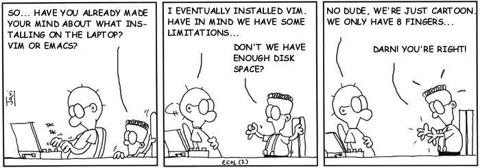
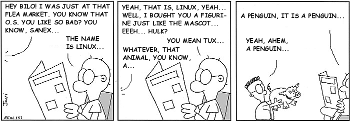
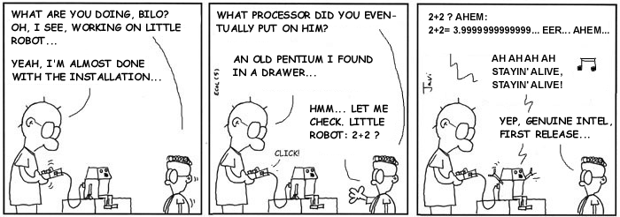
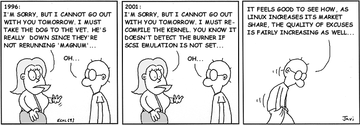
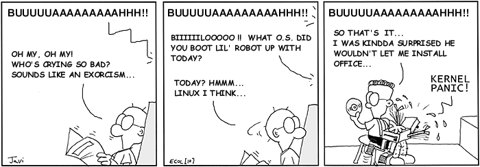
 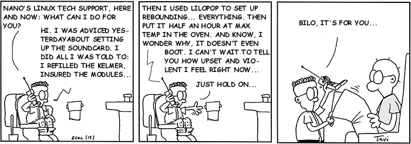
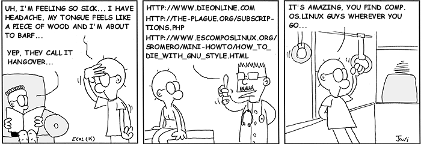
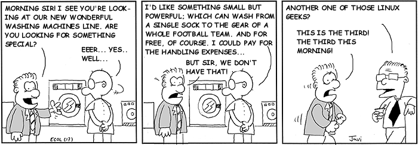
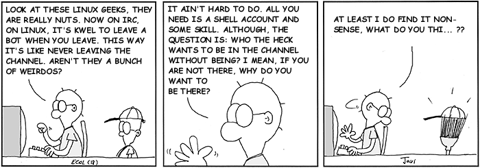
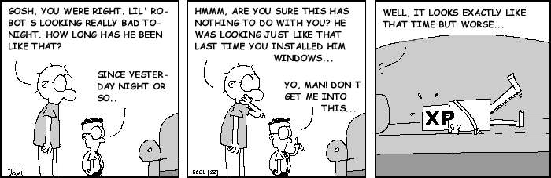
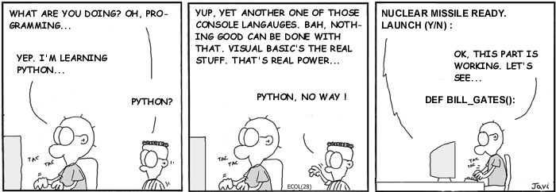
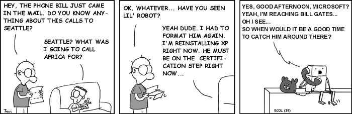
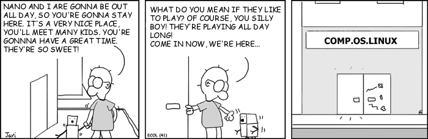
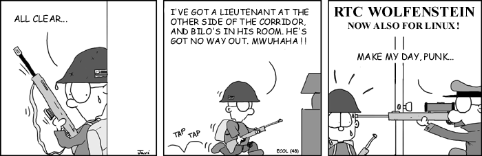
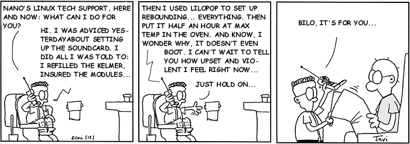
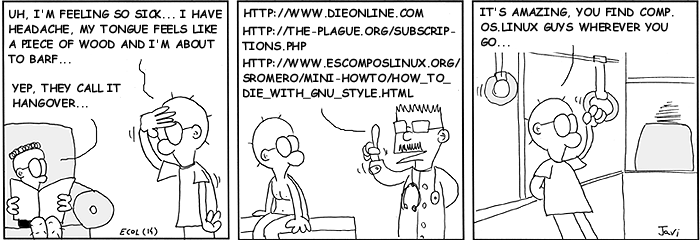
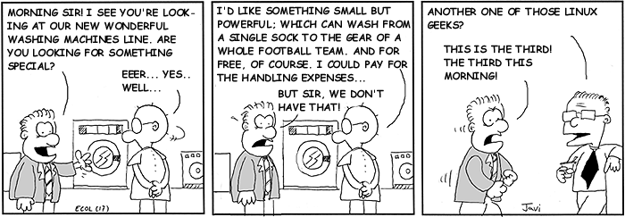
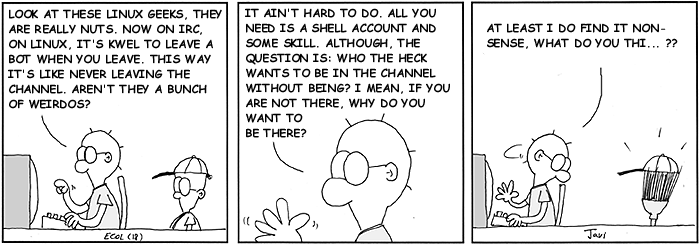
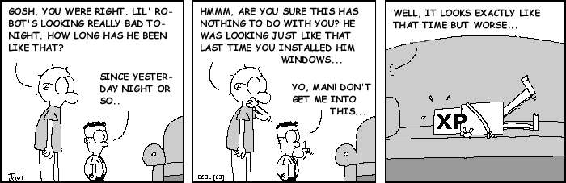
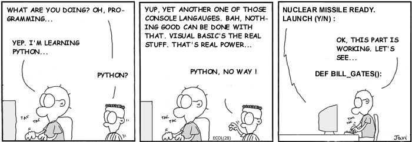
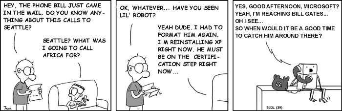
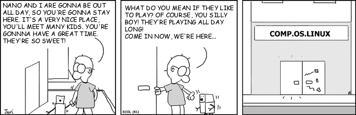
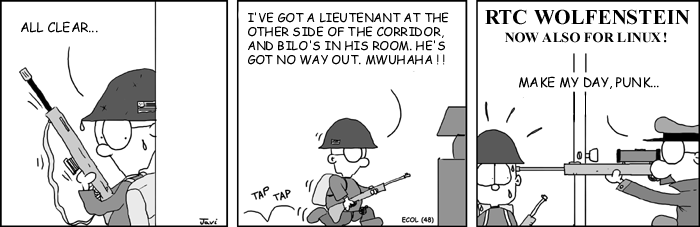
 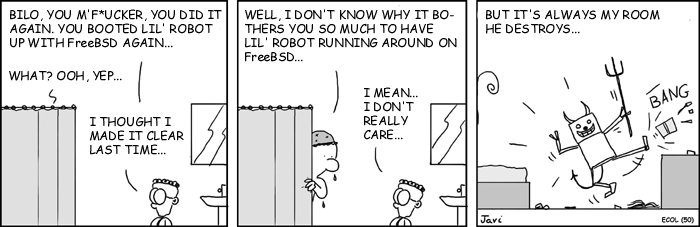
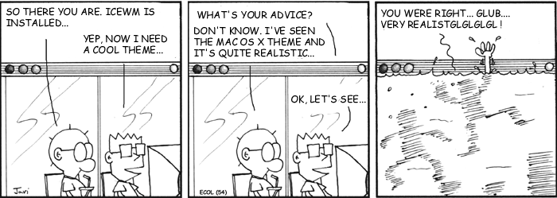
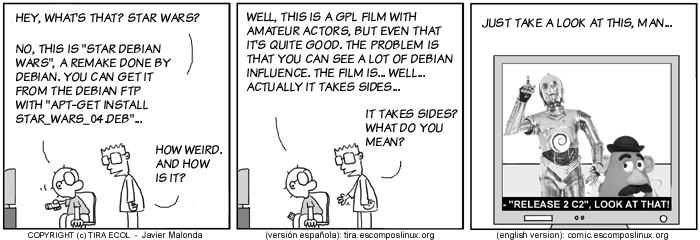
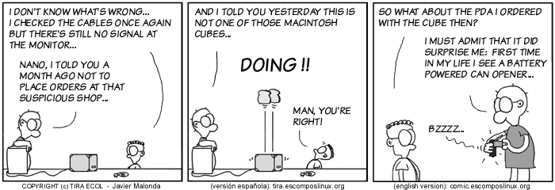
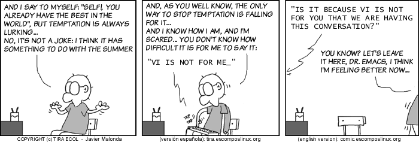
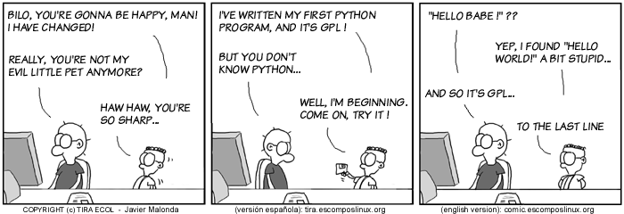
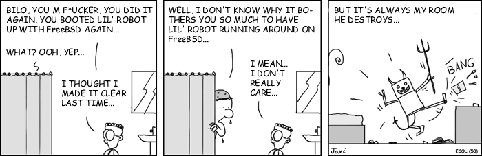
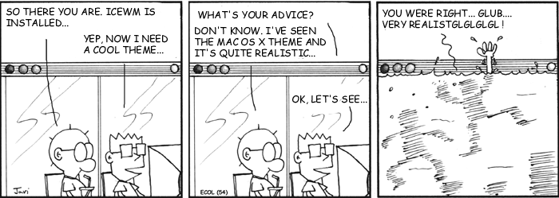
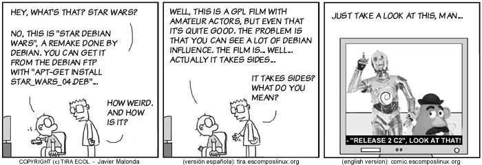
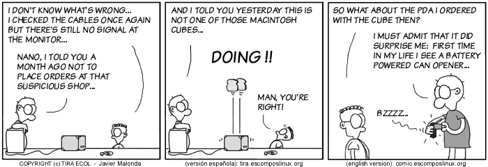
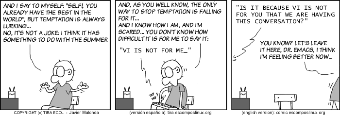
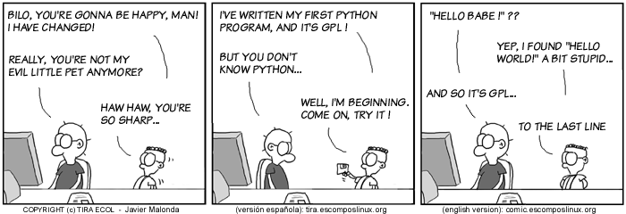
|
...making Linux just a little more fun! |
By Jon "Sir Flakey" Harsem |
[These cartoons are scaled down to fit into LG. To see a panel in all its clarity, click on it. -Editor (Iron).]
All Qubism cartoons are
here
at the CORE web site.
In Parts I and II of this series, we examined the
process of using tools available with Linux to build a simple boot sector and
access the system BIOS. Our toy OS will be closely modelled after a `historic'
Linux kernel - so we have to switch to protected mode real soon! This part
shows you how it can be done.
The 80386+ provides many new features to overcome the
deficiencies of 8086 which has almost no support for memory
protection, virtual memory, multitasking, or memory above 640K -
and still remain compatible with the 8086 family. The 386 has all
the features of the 8086 and 286, with many more enhancements. As
in the earlier processors, there is the real mode. Like the 286,
the 386 can operate in protected mode. However, the protected
mode on 386 is vastly different internally. Protected mode on the
386 offers the programmer better protection and more memory than
on the 286. The purpose of protected mode is not to protect your
program. The purpose is to protect everyone else (including the
operating system) from your program. Superficially protected mode and real mode don't seem to be
very different. Both use memeory segmentation, interrupts and
device drivers to handle the hardware. But there are differences
which justify the existence of two separate modes. In real mode,
we can view memory as 64k segments atleast 16bytes apart.
Segmentation is handled through the use of an internal mechanism
in conjunction with segment registers. The contents of these
segment registers (CS,DS,SS...) form part of the physical address
that the CPU places on the addresss bus. The physical address is
generated by multiplying the segment register by 16 and then
adding a 16 bit offset. It is this 16 bit offset that limits us
to 64k segments. fig 1 : Real Mode Addressing In protected mode, segmentation is defined via a set of tables
called descriptor tables. The segment registers contain pointers
into these tables. There are two types of tables used to define
memory segmentation : The Global Descriptor Table and The Local
Descriptor Table. The GDT contains the basic descriptors that all
applications can access. In real mode one segment is 64k big
followed by the next in a 16 byte distance. In protected mode we
can have a segment as big as 4Gb and we can put it wherever we
want. The LDT contains segmentation information specific to a
task or program. An OS for instance could set up a GDT with its
system descriptors and for each task an LDT with appropriate
descriptors. Each descriptor is 8 bytes long. The format is given
below (fig 3). Each time a segment register is loaded, the base
address is fetched from the appropriate table entry. The contents
of the descriptor is stored in a programmer invisible register
called shadow registers so that future references to the same
segment can use this information instead of referencing the table
each time. The physical address is formed by adding the 16 or 32
bit offset to the base address in the shadow register.These
differences are made clear in figures 1 and 2. fig 2 : Protected Mode Addressing fig 3 : Segment Descriptor Format We have yet another table called the interrupt descriptor
table or the IDT. The IDT contains the interrupt descriptors.
These are used to tell the processor where to find the interrupt
handlers. It contains one entry per interrupt, just like in Real
Mode, but the format of these entries is totally different. We
are not using the IDT in our code to switch to the protected mode
so further details are not given. The 386 has four 32 bit control registers named CR0, CR1, CR2
and CR3. CR1 is reserved for future processors, and is
undefined for the 386. CR0 contains bits that enable and
disable paging and protection and bits that control the
operation of the floating point coprocessor. CR2 and CR3 are
used by the paging mechanism. We are concerned with bit 0 of the
CR0 register or the PE bit or the protection enable bit. When PE
= 1, the processor is said to be operating in protected mode with
the segmentation mechanism we described earlier. If PE = 0, the
processor operates in real mode. The 386 also has the
segmentation table base registers like GDTR, LDTR and
IDTR.These registers address segments that contain the descriptor
tables. The GDTR points to the GDT. The 48 bit GDTR defines the
base and the limit of the GDT directly with a 32 bit linear
address and a 16 bit limit. Switching to protected mode essentially implies that we set
the PE bit. But there are a few other things that we must do. The
program must initialise the system segments and control
registers. Immediately after setting the PE bit to 1 we have to
execute a jump instruction to flush the execution pipeline of any
instructions that may have been fetched in the real mode. This
jump is typically to the next instruction. The steps to switch to
protected mode then reduces to the following : We'll now give the code to perform this switching.
Click here to download the code.
Type in the code to a file by name abc.asm.
Assemble it by typing the command nasm abc.asm.
This will produce a file called abc. Then insert the floppy and
type the following command dd if=abc of=/dev/fd0.
This command will write the file abc to the first sector of the
floppy. Then reboot the system. You should see the following
sequence of messages. We'll first give the code to perform the switching. It is
followed by a detailed explanation. As mentioned in the previous article (Part 1) the BIOS selects
the boot device and places the first sector into the address 0x7c00.
We thus start writung our code at 0x7c00.This is what is implied by
the org directive. print_mesg: This routine uses the subfunction 13h
of BIOS interrupt 10h to write a string to the screen.The attributes
are specified by placing appropriate values in various registers.
Interrupt 10h is used for various string manipulations.We store the
subfn number 13h in ah which specifies that we wish to print a string.
Bit 0 of the al register determines the next cursor position;if it is
0 we return to the beginning of the next line after the function call,
if it is 1 the cursor is placed immediately following the last
character printed. The video memory is split into several pages called
video display pages.Only one page can be displayed at a time(For
further details on video memory refer Part 1).The contents of bh
indicates the page number,bl specifies the colour of the character to
be printed. cx holds the length of the string to be printed.Register
dx specifies the cursor position. Once all the attributes have been
initialised we call BIOS interrupt 10h. get_key: We use BIOS interrupt 16h whose sub
function 00h is used to get the next character from the screen.
Register ah holds the subfn number. clrscr: This function uses yet another subfn of
int 10h i.e 06h to clear the screen before printing a string.To
indicate this we initialise al to 0.Registers cx and dx specify the
window size to be cleared;in this case it is the entire screen.
Register bh indicates the colour with which the screen has to be
filled;in this case it is black. The first assembly language statement is a short jump to the
begin_boot code.We intend to print a brown 'A'in real-mode,set up a
GDT,switch to protected mode and print a white 'A'.Both these modes
use their own addressing methods. In Real-Mode : We use segment register gs to point to video memory.We use a CGA
adapter(default base address 0xb8000).But hey we have a missing 0 in
the code.Well the Real-mode segmentation unit provides the additional
0.This is a matter of convenience,as the 8086 usually does a 20bit
address manipulation.This has been carried over in the real-mode
addressing of the 386.The ascii value for A is 0x41;0x06 specifies
that we need a brown coloured character.The display stays till we
press a key.Next let us display a message on the screen saying we are
going to the world of protected mode.So let us point the bp(base
pointer register to the message to be printed). Launchpad to the protected mode : We don't need any interrupts bothering us,while in protected mode
do we ?So lets disable them(interrupts that is).That is what cli does.
We will enable them later.So lets start by setting up the GDT.We
initialise 4 descriptors in our attempt to switch to protected mode.
These descriptors initialise our code segment(code_gdt), data and stack
segments (data_gdt) and the video segment in order to access the video
memory. A dummy descriptor is also initialised although it's never
used except if you want to triple fault of course. This is a null
descriptor. Let us probe into some of the segment descriptor fields.
The GDT base address has to be loaded into GDTR system register.
The gdtr segment is loaded with the size of the GDT in the first word
and the base address in the next dword. The lgdt instruction then loads
the gdt segment into the GDTR register.Now we are ready to actually
switch to pmode. We start by setting the least significant bit of CR0
to 1( ie the PE bit).We are not yet in full protected mode! Section 10.3 of the INTEL 80386 PROGRAMMER'S REFERENCE MANUAL 1986
states : Immediately after setting the PE flag,the initialization
code must flush the processor's instruction prefetch queue by
executing a JMP instruction.The 80386 fetches and decodes instructions
and addresses before they are used; however, after a change into
protected mode, the prefetched instruction information (which pertains
to real-address mode) is no longer valid. A JMP forces the processor
to discard the invalid information. We are in protected mode now. Want to check it out? Let's get our
A printed in white. For this we initialise the data and extra segments
with the data segment selector (datasel). Initialise gs with the video
segment selector (videosel). To display a white 'A' move a word
containing the ascii value and attribute to location [gs:0000] ie
b8000 : 0000. The spin loop preserves the text on the screen until
the system is rebooted. The times instruction is used to fill in 0s in the remaining
unused bytes of the sector.To indicate that this is a bootable sector
we write AA55 in bytes 511,512. That's about all.
The first computer networks were used to send e-mails and share files and printers
between researchers and corporate employees. In such a scenario security was
not given much thought. Now the computer networks (especially the Internet)
are used by millions for banking, shopping and filing their tax returns, and
network security has become a major problem. Network security can be divided
into four areas.
Why do we need an authentication service? An authentication service verifies
the identity of the communication partner. Authentication is a fundamental building
block of a secure network environment. If a server knows for certain the identity
of its client, it can decide whether to provide it a particular service (for
example.. printing facility) or not, whether to give the user special privileges etc. As
an aside authentication and authorization are different. If user Foo
says "delete file bar", then the problem of verifying whether the
command came from Foo is authentication. The problem of verifying whether Foo
has permission to delete file bar is authorization. Let's take an example of Alice, who wishes to deal with Bob, her banker. In real
life Bob and Alice can authenticate each other by recognizing each others faces,
voices or handwriting . However if they wish to transact over network none of
these options are available. How can Bob be sure that the request to transfer
all of Alice's money to a secret Swiss bank account came from Alice and not
from Eve? This is where an authentication service comes in. Alice starts by sending out
a message to Bob. As these messages are being sent, we have Eve, an intruder,
who may intercept, modify or replay the messages to trick Alice and Bob or just
to throw a spanner in the works. Nevertheless when the authentication is
complete, Alice
is sure she is talking to Bob and Bob is sure that he is talking to Alice. Kerberos was created by MIT as a solution to network security problems. It
has its roots in Project Athena, started in 1983. The aim of Project Athena
was to create an educational computing environment built around high-performance
graphic workstations, high speed networking, and servers of various types. Project
Athena used Kerberos as its authentication system. The name Kerberos comes from
Greek mythology; it is the three-headed dog that guarded the entrance to Hades.
The Kerberos protocol uses strong cryptography so that a client can prove its
identity to a server (and vice verse) across an insecure network connection.
After a client and server have used Kerberos to prove their identity, they can
also encrypt all of their communications to assure privacy and data integrity
as they go about their business. From
http://web.mit.edu/Kerberos/www/
The original design and implementation of Kerberos Versions 1 through 4 was
the work of two former Project Athena staff members, Steve Miller of Digital
Equipment Corporation and Clifford Neuman (now at the Information Sciences Institute
of the University of Southern California), along with Jerome Saltzer, Technical
Director of Project Athena, and Jeffrey Schiller, MIT Campus Network Manager.
Many other members of Project Athena have also contributed to the work on Kerberos.
The latest version of Kerberos 4 from MIT is patch level 10.It is officially
considered "dead" by MIT; all current development is concentrated on Kerberos
5. The latest version of Kerberos 5 is 1.2.1. The art of devising ciphers is known as cryptography and
breaking them is known as cryptanalysis; together they are
known as cryptology . The message to be encrypted is known
as plaintext or cleartext. The plaintext is
encrypted by using a function, which takes as a parameter a key.
The output of the encryption process is known as ciphertext .When
ciphertext is put through a decryption function, we get back
the plaintext. Going back to our story of Alice and Bob, they (Alice and Bob)
are sometimes referred to as principals, the main characters
of the story. Traditionally, the encryption key is same as the decryption key. The key is
known only to the principals. Such a key is known as shared secret
key. However in a cypto system proposed by Diffie and Hellman
(researchers
at Stanford University) in 1976, the encryption and decryption keys are
different. The
key to be used for encryption is made public so that messages to be sent to
that user can be encrypted using the publicly available key. This key is known
as the public key. Each user also has a private key
,known only to the user, which is used for decrypting messages sent
to the user. This system is known as public-key cryptography ,
to contrast with shared-key cryptography. The RSA algorithm is an example of
public-key cryptography. Before describing the authentication process, it is important to remove ambiguities
in the terms to be used. Often network applications are made of two parts,
Kerberos is a trusted third party authentication system. It
is trusted in the sense that each of its client believes the judgment of the
Kerberos' as to the identity of each of its other client to be accurate. To
prove to the application server that it (Kerberos client) is trusted by the
Kerberos server, it uses a ticket .In order for the Kerberos
client to use any application server, a ticket is required. The server examines
the ticket to verify the identity of the user. If all checks out, then the client
is accepted. Along with a ticket an authenticator is also used
by a Kerberos client to prove its identity. The authenticator contains the additional
information which, when compared against that in the ticket proves that the
client presenting the ticket is the same one to which the ticket was issued.
Kerberos maintains a database of its clients and their private keys for authentication.
Because Kerberos knows these private keys, it can create messages which convince
one client that another is really who it claims to be. The designers did not
expect the entire world to trust a single database, so they made provision for
having different realms. The realm is an administrative entity
that maintains authentication data. Each organization wishing to run a Kerberos
server establishes its own "realm". Kerberos assumes that the Kerberos clients are not trustworthy and requires
the client to identify itself every time a service is requested from some other
Kerberos client. The technique used by Kerberos are unobtrusive. Kerberos follows
the following guidelines:
Both the client and the application server are required to have keys registered
with the authentication server (AS). If the client is a user, his key is derived
from a password that he chooses; the key for a service (for example. a printing daemon)
is a randomly selected key. These keys are negotiated during the registration
of the clients. One of the goals of the Kerberos system is to remain as unobtrusive as
possible. In the above exchange, the Kerberos client has to enter in a password every time
it has to decrypt the credentials passed to it by the AS . If the Kerberos client
is a user it becomes quite irritating to enter his password to have a file
printed or whenever he wants modify a file on the network (remember that the
key is derived from the user's password). The obvious way around this is to
cache the key derived from the password. But caching the key is dangerous. With
a copy of this key, an attacker could impersonate the user at any time (until
the password is next changed). Kerberos resolves this problem by introducing a new agent, called the ticket
granting server (TGS). The TGS is logically distinct from the AS, although they
may reside on the same physical machine. (They are often referred to collectively
as the KDC--the Key Distribution Center). The function of the TGS is as follows.
Before accessing any regular service, the user requests a ticket to contact
the TGS, just as if it were any other service. This usually occurs when the
user first logins into the system. This ticket is called the ticket granting
ticket (TGT). After receiving the TGT, any time that the user wishes to contact
a service, he requests a ticket not from the AS, but from the TGS. Furthermore,
the reply is encrypted not with the user's secret key, but with the session
key that the AS provided for use with the TGS. Inside that reply is the new
session key for use with the regular service. The rest of the exchange now continues
as described above. The TGT is good only for a fairly short period, typically
eight hours.
The Kerberos protocol is designed to operate across organizational
boundaries. A client in one organization can be authenticated to a
server in another. Each organization wishing to run a Kerberos
server establishes its own "realm". The name of the realm in which a
client is registered is part of the client's name, and can be used by
the application server to decide whether to honor a request.
By establishing "inter-realm" keys, the administrators of two realms can allow
a client authenticated in the local realm to use its authentication remotely
The exchange of inter-realm keys registers the ticket-granting service of each
realm as a principal in the other realm. A client is then able to obtain a ticket-granting
ticket for the other realm's ticket-granting service from its local realm. When
that ticket-granting ticket is used, the other ticket-granting service uses
the inter-realm key (which usually differs from its own normal TGS key) to decrypt
the ticket-granting ticket, and is thus certain that it was issued by the client's
own TGS. Tickets issued by the remote ticket- granting service will indicate
to the end-service that the client was authenticated from another realm.
Kerberos is not a one-shot solution to the network security problem.Trust is inherent
throughout the system: the client trusts Kerberos, if it correctly provides the client's
encryption key.The application trusts the client if the client successfully provides a
ticket that is encrypted using the server's key.In this trust lies the weakness of the system.
Specifically speaking, secret keys should be kept just that, secret. If an intruder somehow
steals a principal's key, it will be able to impersonate the principal. "Password guessing"
attacks are not solved by Kerberos. If a user chooses a poor password, it is possible for an
attacker to successfully mount an dictionary attack.Kerberos makes no provisions for client's
security; it assumes that it is running on trusted clients with an untrusted network. If the
client's security is compromised, then Kerberos is compromised as well. However, the degree to
which Kerberos is compromised depends on the host that is compromised. If an attacker breaks
into a multi-user machine and steals all of the tickets stored on that machine, he can
impersonate the users who have tickets stored on that machine .... but only until those
tickets expire.
Since its initial installation on my machine in 2000, Linux
has fulfilled my computing needs.
I use Linux for the following:
This article focuses on the last item, digital photography, and
describes how I use Linux to store,
manipulate, and share my digital photographs.
I store my photographs in two places: on my hard drive, which
acts as short-term storage, and on CD-ROM, where the photographs are
permanently stored. I keep the last few months of photographs
on my machine so they can be recalled quickly, and I
transfer the older ones to CD-ROM to free up space on my drive.
To download photographs from my camera to my computer, I use
the USB Mass Storage Driver.
This driver is part of the Linux kernel, and
lets me mount my camera as a SCSI device. I then use the
mv command to transfer the photographs to my
hard disk. My session usually looks like the following:
Pretty simple, right? I mount the camera, move the photographs to
a directory on my hard disk, and then unmount the camera.
(The USB Mass Storage Driver works with only a few camera models. Mine is a
Sony DSC-F707. Many other cameras such as the Canon PowerShot series are
recognized by the Gphoto2 program. Some
cameras don't work yet under Linux -- it all depends on the camera manufacturer
giving us, the free software community, enough technical specifications that
we can write a driver.)
When my hard disk becomes filled, I transfer the older photographs to
CD-ROM.
I accomplish this by placing a blank CD-ROM in my CD Writer and
typing the following at a command prompt
(see the
CD Writing HOWTO for information on how to use your
CD Writer):
This creates a cd image containing my photographs, and
burns the image to a fresh CD-ROM.
In photography, composition deals with the placement of objects
within the frame of the photograph. A photographer makes many important
decisions when composing a photograph:
As a novice photographer, my composition skills are lacking.
I usually include too much background in my photographs,
and I am oblivious to the camera's numerous features.
I use the GIMP
to salvage my poor photographs. GIMP
stands for the GNU Image Manipulation Program - it is
a full-featured image manipulation application, similar
to Adobe's Photoshop. I use it to perform the following:
These are only a few of the GIMP's features, but they greatly improve
the quality of my photographs. I look forward to learning more
about the GIMP.
I share my digital photographs with friends and family. I accomplish this
by posting the photographs to a publicly-accessible web site.
Before posting, however, I do the following:
I use two
Python scripts to perform these
operations automatically.
The first is named
generate_photographs.
This script uses the
convert command to
create web-sized photographs and thumbnails (convert is part of
the ImageMagick
suite of tools. Definitely check them out). The following
is the complete script:
The second script is named
generate_html.
It loops through the photographs,
and creates the HTML needed to display them on a web page. The following
is the script, trimmed to show the Python code only:
After running these two scripts, I post the files
to my web site, and email the address to everyone.
In this article I described how I use Linux to
store, manipulate, and share
my digital photographs. Hopefully I explained
my techniques clearly enough so that you can use
them for your digital photography needs.
Introduction. Automatic firewall hardening
is a technique used by many commercial firewalls to prevent
invalid packets from reaching protected networks. The objective
of this document is to demonstrate how to harden iptables in real-time. By default, iptables can log
messages via the Linux syslogd daemon. Logs by themselves are
fine for basic security but do not address advanced security
issues. For advanced security a system needs to run custom
scripts as soon as illegal operations are logged by the
firewall. Depending on the severity of the violations, you can
program these scripts to perform various actions such as blocking
offending IP addresses. The techniques outlined in this document
are not limited to iptables, and can also be modified to process
output from any application which logs via syslog e.g. intrusion
detection scanners such as SNORT. The content in this document
has been tested against Red Hat 7.2/7.3 only, but then, I live on
the island of Mauritius which is a hell of a journey from
civilisation, and all of us here are scantily clad Zulu warriors
:-) For more info about Mauritius and scuba diving try www.islandsoft.net An excellent document on the
Linux firewall capabilites is the Iptables Tutorial by Oskar
Andreasson which you can find at http://iptables-tutorial.haringstad.com/
Linux Reference
Books. Here are some Linux books
which you may find interesting. Please open each link in a new
window. Advanced
Linux Networking The Theory. Linux syslogd incorporates
an interesting feature which allows it to redirect its output to
user defined pipes instead of log files. I will use a Perl script
to process messages coming from syslogd and dynamically
reconfigure iptables. What You Will Need. The examples in this
document use a postgresql server. Most people are familiar with
MySQL ,so porting should not be a problem. I prefer Postgres
because it has many features present in commercial databases. For
more information about PostgreSQL visit http://www.postgresql.org/. You will also need the postgresql-perl,
Perl and iptables packages installed on the firewall machine. On the postgreSQL server
create a database called "adaptive" and a table called
"iptables". Add the folowing fields. Basic Security. TO DO: More detail on MAC
addressses and ARP poisoning. In my opinion, the only
services, which should be running on a firewall, are syslog and
cron. You should also have a printer logging whatever gets sent
to syslog. The reason for having a printer is that if your
machine does get hacked, and the cracker overwrites the logs, you
will still be able to see how the exploit was performed. Your
firewall should also preferably be running off a CD-ROM and
loading its ruleset from a write protected floppy disk. Knowing the MAC addresses
present on your network is very important. The firewall must be
aware of any rogue MAC addresses, which may be originating from a
machine which, may have been unlawfully introduced into your
network. Locking Down The
Firewall During The Boot Process. The first step that you will
want to take is to secure your firewall while it is booting. By
default, iptables allows unrestricted packet movement on the
INPUT, OUTPUT and FORWARD chains. This poses a security threat
while your machine is booting, and opens up your network to
various types of assault. To avoid this, you must instruct
iptables to block all packet movement BEFORE the network
interfaces start up. On the Redhat distributions
the link "S10network" found in "/etc/rc.d/rc3.d"
is responsible for starting the network. You may also have "S08iptables"
found in "/etc/rc.d/rc3.d". This link is responsible
for initialising the firewall routines. I prefer to delete the
default "S08iptables" link and create my own link
starting with "S08". The link starting with "S08"
gets executed before the one starting with "S10" thus
ensuring that no packets get through. There are various kernel
options which you can set to enhance security. A few of them are
set in the example below. In order to secure the
firewall during boot, do the following: The
rc.autofwinit script Defining an Iptables
Script. Once the firewall boot
process is secured you must create the firewall script which will
log invalid packets to syslog. The iptables script presented
below is very basic. If you wanted to be more adventurous, then
you could use the DMZ script from the "Iptables Tutorial"
found at http://iptables-tutorial.haringstad.com/ and enhance it. The
rc.autofwrules script Creating a Named
Pipe. The named pipe is the
interface between syslog and the blocking script. For more info, "man
mknod" is your friend. Setting Up a
Blocking Script. Once iptables and the named
pipe are set up, it is time to create a script that will handle
messages coming from the syslog daemon. The script is the core of
the automatic hardening process. The example below demonstrates
how to automatically lock out machines, and communicate with a
database server running PostgreSQL. The
rc.autofwharden script Configuring Syslogd. The final step is to
configure the syslog daemon. Normally, syslog echoes messages to
a tty and the file "/var/log/messages". We will
instruct syslog to echo messages to the named pipe instead. Look for an entry starting
like If you can't/can find the
line then add/change the line to look like Viewing the Results. From a remote system run
nmap available from http://www.insecure.org/nmap with the Fin scan option. On the firewall machine, run
the command "/sbin/iptables -L" and note the difference
in the "Banned" chain. To view the firewall
database, login as a postgresql user and type in This should give you a list
of all banned addresses added to the database. Adaptive Firewall
FAQ. Q. How safe is the adaptive
firewalling code in this document? A. The hardening script in
this tutorial is very basic. Since the script automatically bans
machines, you can imagine what would happen if someone managed to
spoof the source addresses. In this case, legitimate IP addresses
would get blocked. However, during a legitimate attack, you could
identify which domain was the most offending, and ban any machine
attempting to connect from it. Q. Why is my firewall
continuously logging ACK, FIN, URGP=0 ? A. In 99.99% cases this is
normal behaviour. This is due to the connection state matching
code in Iptables which by default tracks each connection for 60
seconds. Once a connection is inactive for 60 seconds, Iptables
wipes it from its tracking table, but the server at the other end
does not know that. When the server tries to close the connection
from its end, it sends a packet with this TCP flag sequence which
gets intercepted by the firewall. Acknowledgments. I would like to thank the
following people for contributing towards this document. Oskar Andreasson
Setting up several screens on your Win/Lin box. Must-read section This article has been much inspired by a paper entitled
"Multihead systems" (I think - I read the Spanish translation
called "Sistemas multihead") in Linux Journal, by Brian
Gollsneider and Arthur M. Messenger. They're the guys to blame for
getting me interested in this! The "X --help" page ... worth browsing. About multiheading As you people know, multiheading is all about hanging many screens
on one computer. You can then either use the different screens to display
various parts of the same desktop, or different desktops. It has
been done with Unix systems since very early on - around about when they
invented the X-Windowing system. It can be useful when you tend to get a lot
of data on screen -- typical examples are engineering (drawing and 3D
models) and system or network monitoring. Its generalization is a bit more recent under Windows, though
several video card makers have pushed the idea with dual-head cards.
These are not necessary though; several ordinary video cards can
play the trick. In fact, one can mix many different kinds of ISA, PCI and AGP cards. In this article, I will see how it works under Windows (98 version -
though others should be the same) and Linux + XFree86 version 4. Please
note that XFree86 version 3's configuration files are slightly different. Considerations about hardware The BIOS will choose one screen to be the primary screen. This is
where your boot messages will appear and where you'll get the initial
console. The BIOS looks for the primary screen on the following buses
in order:
ISA cards: if anybody still uses them, be warned they get
preference before all others. Can still be useful for text
consoles. PCI cards. The PCI bus is a mixed thing, in the sense that
you get both on-board devices and PCI cards all together. On
most motherboards, it is a single bus numbered 0, with devices
numbered 0:0 (host controller), 0:1, 0:2 etc. There can be
sub-devices such as 0:9:1, 0:9:2, and so forth. On-board PCI devices get the lower numbers, generally
up to 0:7. Afterwards, devices 0:8 to 0:12 should be your
PCI slots, numbered from the "bottom" of the motherboard
in the direction of the AGP slot. Almost all motherboards have only one AGP slot, though
there is no technical reason why. It is identified as a PCI
device on bus 1, as 1:0 For example, if you have one on-board PCI video card, one
removable PCI and one AGP, your device ordering might be: Other motherboard manufacturers set up the on-board video devices
with higher numbers than the slots. This way, if your on-board
video burns out (or you just want to upgrade), you insert a
new PCI video card and its lower number gets preference at boot. You can get detailed information on this under Linux, for
example, this system has a single AGP card: Another way (with root privileges) is: Please note that the order of cards is BIOS stuff -- and so applicable
both to Windows and Linux. Configuration under Windows This is meant to be pretty easy -- and is, except when you
run into driver trouble. So I would advise you to start out
by sticking *one* video card into your computer, then making sure
you have the necessary drivers. Then go for the next card alone,
and so forth. That way you get the pain in small pieces you can
hopefully handle, instead of all at once. When you are confident you have all the required drivers either
on CD or on hard disk, and that they actually work with your cards,
stick all the video cards in together and hang screens on them. Boot. You will then get to reconfigure the drivers once more, one
after the other. You may also get to reboot the computer -- but
you're used to that, right? At this time, you should get the usual Windows desktop on your
first (main) screen, and a text message on all others telling you
that Windows has recognized the device correctly. If you don't,
go back and reconfigure that video card correctly. When you take a look at the screen properties, you should see
something like this: 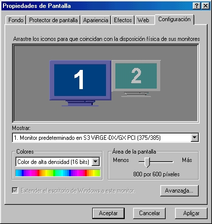 You then click on the number 2 screen, activate it, configure,
and off you go. So forth for all others. Note that screens need not
have the same resolution or color depth: 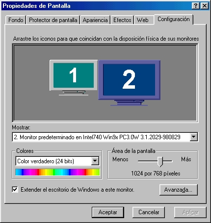 Hopefully, you are then in business, and can drag windows
from one screen to another. Try it! Configuration with XFree86 XFree86 version 4 has been changed in several ways from
its version 3 predecessor. To begin with, the configuration
file is now Please note the -4 ending. It has now dealt away with the antique separate server binary file
for each screen. We now have a more modern modular scheme with a
single main server file, plus modules (drivers) for each family
of video cards. These can be found in most distributions in: This is similar to what has happened to the Linux kernel: from
a monolithic kernel with all drivers included, modern kernels have
progressed to a loadable modular scheme. Luckily for us. Here's a list of the most-used drivers:
Jon is the creator of the Qubism cartoon strip and current
Editor-in-Chief of the
CORE News Site.
Somewhere along the early stages of
his life he picked up a pencil and started drawing on the wallpaper. Now
his cartoons appear 5 days a week on-line, go figure. He confesses to
owning a Mac but swears it is for "personal use".
 Jon "SirFlakey" Harsem
Jon "SirFlakey" Harsem
Published in Issue 82 of Linux Gazette, September 2002

...making Linux just a little more fun!
By Raghu and Chitkala
[Krishnakumar is unable to continue this series himself due to other
commitments, so he has handed it over to his junior colleagues,
Raghu and Chitkala, who have written part III. -Editor.]
1. What is Protected Mode ?
1.1 Protected Mode vs Real Mode


2. Entering Protected Mode
3. What we need
4. The Code that does everything !
FUNCTIONS USED
Where everything begins !!
Raghu and Chitkala are seventh-semester students at the Government
Engineering College, Thrissur, India. Their final-year project is porting User
Mode Linux to BSD. Their interests include Operating Systems, Networking and
Microcontrollers.
Raghu and Chitkala
Published in Issue 82 of Linux Gazette, September 2002

...making Linux just a little more fun!
By Raj Shekhar
Introduction
Need for Authentication
Enter Kerberos
Many of the protocols used in the Internet do not provide any security.
Tools to "sniff" passwords off the network are in common use by systems crackers.
Thus, applications which send an unencrypted password over the network are extremely
vulnerable. Worse yet, other client/server applications rely on the client program
to be "honest" about the identity of the user who is using it .Other applications
rely on the client to restrict its activities to those which it is allowed to
do, with no other enforcement by the server.
Some Keywords First
And Some More ...
In a sense, every entity that uses the Kerberos system is a client. To distinguish
between the Kerberos client and the client of a service, the client using the
Kerberos service is known as a Kerberos client. The term application
server refers to the server part of the application, that the clients
communicate with using Kerberos for authentication.
And Now the Details
Why is a timestamp included? The timestamp is put to prevent
someone else from copying the ticket and using it to impersonate the Kerberos
client at a later time. This type of attack is known as a replay.
Because
clocks don't always work in perfect synchrony, a small amount of leeway
(about five minutes is typical) is given between the timestamp and the current
time.
The AS does not know whether the client is actually the principal
which initiated the request for a the ticket. It simply sends a reply without
knowing or caring whether they are the same. This is acceptable because
nobody but the Kerberos client whose identity was given in the request will
be able to use the reply. Its critical information is encrypted in that
principal's key.
The Ticket Granting Ticket
Cross Realm Authentication
Conclusion
I have completed my Bachelor in Information Technology from University
of Delhi. I have been a Linux fan since the time I read "Unix Network
Programming" by Richard Stevens and started programming in Linux in my seventh
semaster . I have been trying to convert people right,left and center ever
since. I live at
http://geocities.com/lunatech3007.
Raj Shekha
Published in Issue 82 of Linux Gazette, September 2002

...making Linux just a little more fun!
By Rob Tougher
Contents
Introduction
Storing Photographs
prompt$ mount -n /dev/sdb1 /mnt/camera
prompt$ mv /mnt/camera/dcim/100msdcf/* /home/robt/docs/photographs/
prompt$ umount -n /mnt/camera
prompt$ mkisofs -t iso9660 -o ro,loop=/dev/loop0 cd_image /home/robt/docs/photographs
prompt$ cdrecord -v speed=4 dev=0,0,0 -data cd_image
Manipulating Photographs
Sharing Photographs
#!/usr/bin/env python
import os
#
# Prints the call to
# stdout, and then sends it
# to the OS.
#
def system_call(s):
print s
os.system(s)
#
# Clear out the directories. "small"
# contains thumbnails, and "medium"
# contains web-sized photographs.
#
for d in ("small", "medium"):
system_call("rm -rf " + d)
system_call("mkdir " + d)
files = os.listdir("photographs")
for file in files:
if file != ".directory":
system_call("convert -resize 640x480 photographs/" + file + " medium/" + file)
system_call("convert -resize 160x120 medium/" + file + " small/" + file)
#!/usr/bin/env python
import os
#
# HTML-related stuff removed....
#
html = ""
files = os.listdir("photographs")
br = 0
for file in files:
html += '<a href="medium/' + file + '">'
html += '<img src="small/' + file + '"></img>\n'
html += '</a>'
if br:
html += '<br>\n'
br = 0
else:
br = 1
#
# HTML-related stuff removed....
#
f = open("index.php","w+b")
f.write(html)
f.close()
Conclusion
Rob is a C++ software engineer in the New York City area.
Rob Tougher
Published in Issue 82 of Linux Gazette, September 2002

...making Linux just a little more fun!
By Vasoo Veerapen
Hack
Attacks Revealed: A Complete Reference
Hacking
Linux Exposed
Linux
Firewalls (2nd Edition)
Linux
Routers
Network
Intrusion Detection (An Analysts Handbook, 2nd Edition)
PHP
and PostgreSQL Advanced Web Programming
Real
World Linux Security: Intrusion Prevention, Detection and
Recovery
Red
Hat Linux 7.3 Bible
#!/bin/sh
#
# rc.autofwinit - Initialises firewall on boot
#
# Copyright (C) 2001,2002 Vasoo Veerapen (dive_mauritius@killspamforever.hotmail.com);
# http://www.islandsoft.net/veerapen.html
#
# This program is free software; you can distribute it and/or modify it under the terms of
# the GNU General Public License as published by the Free Software Foundation; version 2
# of the License.
#
# This program is distributed in the hope that it will be useful, but WITHOUT ANY WARRANTY;
# even the implied warranty of MERCHANTABILITY or FITNESS FOR A PARTICULAR PURPOSE. See the
# GNU General Public License for more details.
#
# You should have received a copy of the GNU General Public License along with this program
# or from the site that you downloaded it from; if not, write to
# the Free Software Foundation, Inc., 59 Temple Place, Suite 330, Boston MA 02111-1307, USA
#
#
# Maybe you are more interested in scuba diving, marine conservation or my
# homeland, the paradise island of Mauritius where the Dodo used to live?
# Its simply http://www.islandsoft.net/
#
# ----------------------------------------------------------------------
echo "Initialising firewalling...Dropping all packets"
IPT=/sbin/iptables
#Block ICMP redirects
for CONF in /proc/sys/net/ipv4/conf/*/accept_redirects; do
echo 0 > $CONF
done
# Block IP Source Routing
for CONF in /proc/sys/net/ipv4/conf/*/accept_source_route; do
echo 0 > $CONF
done
# Block IP spoofing
for CONF in /proc/sys/net/ipv4/conf/*/rp_filter; do
echo 1 > $CONF
done
# Clear tables
for TABLE in filter nat; do
$IPT -t $TABLE –F
$IPT -t $TABLE –X
done
# Drop all packets
$IPT -P INPUT DROP
$IPT -P OUTPUT DROP
$IPT -P FORWARD DROP
echo "Done initialising."
sleep 2
#!/bin/sh
#
# rc.autofwrules - Firewall script for automatic firewall hardening
#
# Copyright (C) 2001,2002 Vasoo Veerapen (dive_mauritius@killspamforever.hotmail.com)
# http://www.islandsoft.net/veerapen.html
#
# This program is free software; you can distribute it and/or modify it under the terms of
# the GNU General Public License as published by the Free Software Foundation; version 2
# of the License.
#
# This program is distributed in the hope that it will be useful, but WITHOUT ANY WARRANTY;
# even the implied warranty of MERCHANTABILITY or FITNESS FOR A PARTICULAR PURPOSE. See the
# GNU General Public License for more details.
#
# You should have received a copy of the GNU General Public License along with this program
# or from the site that you downloaded it from; if not, write to
# the Free Software Foundation, Inc., 59 Temple Place, Suite 330, Boston MA 02111-1307, USA
#
# Maybe you are more interested in scuba diving, marine conservation or my
# homeland, the paradise island of Mauritius where the Dodo used to live?
# Its simply http://www.islandsoft.net/
#
# ----------------------------------------------------------------------
IPT="/sbin/iptables"
INT_IF="eth0"
EXT_IF="ppp0"
LOG_LEVEL="notice"
#
$IPT -P INPUT ACCEPT
$IPT -P OUTPUT ACCEPT
$IPT -P FORWARD ACCEPT
#*******************************************************************************
#FILTER_FLAGS
#*******************************************************************************
echo Entering FILTER_FLAGS
$IPT -N FILTER_FLAGS
$IPT -F FILTER_FLAGS
##----------------------------------------------------------------------------##
$IPT -A FILTER_FLAGS -p tcp --tcp-flags ALL FIN -m limit \
--limit 5/minute -j LOG --log-level $LOG_LEVEL \
--log-prefix "iptables:SCAN:"
$IPT -A FILTER_FLAGS -p tcp --tcp-flags ALL FIN -j DROP
##----------------------------------------------------------------------------##
echo Leaving FILTER_FLAGS
#*******************************************************************************
# BANNED
#*******************************************************************************
echo Entering BANNED
$IPT -N BANNED
$IPT -F BANNED
##----------------------------------------------------------------------------##
# Leave blank
##----------------------------------------------------------------------------##
echo Leaving BANNED
$IPT -A INPUT -j BANNED
$IPT -A INPUT -j FILTER_FLAGS
$IPT -A OUTPUT -j BANNED
$IPT -A OUTPUT -j FILTER_FLAGS
#------------- End firewall script
#!/usr/bin/perl –w
#
# rc.autofwharden - Processes messages from syslogd
#
# Copyright (C) 2001,2002 Vasoo Veerapen (dive_mauritius@killspamforever.hotmail.com);
# http://www.islandsoft.net/veerapen.html
#
# This program is free software; you can distribute it and/or modify it under the terms of
# the GNU General Public License as published by the Free Software Foundation; version 2
# of the License.
#
# This program is distributed in the hope that it will be useful, but WITHOUT ANY WARRANTY;
# even the implied warranty of MERCHANTABILITY or FITNESS FOR A PARTICULAR PURPOSE. See the
# GNU General Public License for more details.
#
# You should have received a copy of the GNU General Public License along with this program
# or from the site that you downloaded it from; if not, write to
# the Free Software Foundation, Inc., 59 Temple Place, Suite 330, Boston MA 02111-1307, USA
#
#
# Maybe you are more interested in scuba diving, marine conservation or my
# homeland, the paradise island of Mauritius where the Dodo used to live?
# Its simply http://www.islandsoft.net/
#
# ----------------------------------------------------------------------
use Pg;
use strict;
my $log_datetime="";
my $log_address="";
my @parms = ();
my $msgSource = "";
my $sourceIP = "";
my $sourcefile = "dump";
my $tmprec = "";
my $conn="";
my $result="";
my $temp="";
#Open the database first
$conn=Pg::connectdb("dbname=adaptive user=postgres password=password");
( PGRES_CONNECTION_OK eq $conn->status )
and print "Pg::connectdb ok:\n"
or die "Pg::connectdb failed: ", $conn->errorMessage, "\n";
#Open a named pipe
#open(FIFO, "< /etc/rc.d/syslog_auth") or die $!;
#printf "Pipe opened. \n";
#while(<FIFO>) {
#Or maybe you want to open a test file instead of a pipe?
open(SOURCE, "< $sourcefile") or die $!;
printf "File opened. \n";
while (<SOURCE>) {
@parms = split(/ /, $_);
$msgSource = $parms[5];
if ($msgSource eq "iptables:SCAN:")
{
#Set date and time
$log_datetime="$parms[1]-$parms[0]-2002 $parms[2]";
#Set source address
$temp = $parms[9];
$log_address = substr($temp, 4, length($temp) -4);
printf "Adding address %s to database. \n", $log_address;
$result = $conn->exec("INSERT INTO iptables (ipaddress, severity, time) VALUES ('$log_address', '1','$log_datetime')");
die $conn->errorMessage unless PGRES_COMMAND_OK eq $result->resultStatus;
$temp = "/sbin/iptables -A BANNED -s $log_address -j DROP";
printf "%s \n", $temp;
system($temp);
}
}
#close(FIFO);
#Close the test file instead.
close(SOURCE);
$result=$conn->exec("DROP DATABASE adaptive");
die $conn->errorMessage unless PGRES_COMMAND_OK eq $result->resultStatus;
#--------------- End of rc.autofwharden PERL Script;
*.info;mail.none;authpriv.none
*.info;mail.none;authpriv.none |/etc/rc.d/syslog_auth
Published in Issue 82 of Linux Gazette, September 2002

...making Linux just a little more fun!
By Alan Ward
First (main) device: PCI 0:6 (on-board)
Second device: PCI 0:10 (removable)
Third device: PCI 1:0 (AGP)
cat /proc/pci
PCI devices found:
(((snip)))
Bus 1, device 0, function 0:
VGA compatible controller: Intel Unknown device (rev 33).
Vendor id=8086. Device id=7800.
Medium devsel. Fast back-to-back capable. IRQ 11. Master Capable. No bursts.
Prefetchable 32 bit memory at 0xce000000 [0xce000008].
Non-prefetchable 32 bit memory at 0xcfe80000 [0xcfe80000].
scanpci
/etc/X11/XF86Config-4
/usr/X11R6/lib/modules/drivers
driver cards supported ati most early ATI cards r128 ATI Rage-128 and 128-based cards cirrus Cirrus Logic GD54?? cyrix Cyrix Media GX CPU i740 Intel 740-based cards i810 Intel 810-based cards mga Matrox 100, 200, 400 nv N-vidia Riva 128, TNT GeForce, etc. s3 S3 non-Virge early PCI chipsets s3virge S3 Virge later PCI chipsets vga generic; replaces XFree86-SVGA fbdev generic; "flat" video memory mode
This system also means that it will be relatively easy for card manufacturers to produce their own modular drivers to support new cards. Let's hope that they do so.
Configuration is not complicated. The first part of the XF86Config-4 file should be pretty much self-explanatory, and is often rather well set up by your favorite distribution's setup program.
In the Monitor section, each monitor gets its Section tag, such as:
Section "Monitor"
Identifier "monitor 1"
VendorName "Philips"
ModelName "Unknown"
HorizSync 30.0-64.0
VertRefresh 50.0-110.0
EndSection
You can put in as many monitors as you wish, and name them. I usually call them "monitor 1" etc., as they are often of the same type and make. But you can handle this whatever way you feel most comfortable with.
BE CAREFUL with the horizontal and vertical frequencies. You can literally blow up your tube if you are not careful. Been there, done that :-( Get the right frequencies from the monitor's guide, or look them up on the manufacturer's site on the Web. If in doubt, go lower. Values that have worked out to be "safe" for me -- i.e. no screens blown up -- have been:
HorizSync 31.5-35.5 VertRefresh 50.0-70.0
Just about any modern multisync monitor can handle these -- however they are so conservative you won't be able to go far beyond 640x480 with 8-bit color (256 colors). Just enough to prove the concept :-)
You then get to set up the driver for each video card. List the directory mentioned above. One Section for each card:
Section "Device"
Identifier "device 1"
Driver "s3virge"
BusID "PCI:0:11:0"
EndSection
Section "Device"
Identifier "device 2"
VendorName "Unknown"
BoardName "Unknown"
Driver "i740"
VideoRam 8192
BusID "PCI:1:0:0"
EndSection
In this case, I have one S3 card inserted in a PCI slot, and an Intel 740-based AGP card. With a single card, you do not need to look up and specify the bus ID (from /proc/pci). But in our case we need it to distinguish, for example, between several cards of the same type.
In the above example, if I added a second S3 Virge in PCI slot 0:12, I would add a third Device section repeating the "s3virge" driver line, and specifying "PCI:0:12:0". The server is smart enough not to create two instances of the driver in memory, just two references to the same driver.
As with monitors, the Identifier tag set up by the setup program usually contains the card's chipset commercial identifier, though you can change it at will.
You then set up a Screen section linking each Monitor to the appropriate Device. I strip this down to the essentials:
Section "Screen"
Identifier "screen 1"
Device "device 1"
Monitor "monitor 1"
DefaultColorDepth 16
Subsection "Display"
Depth 16
Modes "1024x768"
ViewPort 0 0
EndSubsection
EndSection
Section "Screen"
Identifier "screen 2"
Device "device 2"
Monitor "monitor 2"
DefaultColorDepth 24
Subsection "Display"
Depth 24
Modes "800x600"
ViewPort 0 0
EndSubsection
EndSection
Finally, you set up the whole system:
Section "ServerLayout"
Identifier "layout 1"
Screen "screen 1"
Screen "screen 2" RightOf "screen 1"
Option "Xinerama" "on"
InputDevice "Mouse1" "CorePointer"
InputDevice "Keyboard1" "CoreKeyboard"
EndSection
Here, I have screen 2 at the right of screen 1. I could also have specified it to be at the left, above of below any existing screen.
The Xinerama option is also important. This is an extension of the X server that links screen 1 with screen 2, to form a single desktop I can drag windows and icons across.
This works in the same way as Windows, but needs both (or all) screens to have the same color depth: generally 8, 16 or 24 bits. This means the above example shouldn't work! (Read it again to make sure you understand why before reading on.)
But you may prefer two screens with separate desktops. For example, you could have one screen for your own use, and make the other available over your local network. Or one screen with KDE and the other without any window manager. Your choice. This can be done simply by turning off Xinerama:
Option "Xinerama" "off"
Finally, you may prefer to keep a screen for the text console: include "screen 2", "screen 3", etc in your ServerLayout section, omitting "screen 1" (generally the console if where you boot from and where you get system error messages).
Trying out XFree
As with Windows, it is best to start out by testing each video card individually. Start at the text console (runlevel 3). Keep one screen in your ServerLayout, commenting out the others with a # at the beginning of the line. You can then start up the X server (no need for a desktop yet):
X
You should get a black-and-white crisscross pattern, with an X-shaped mouse cursor in the middle. Good. You can shut down X and get back to the text console with
Ctrl + Alt + Backspace
Now do the same for the other cards. When you have everything set up, just uncomment all screen entries in ServerLayout, and test X once more. You should now get the crisscross pattern on all screens, and if you activated Xinerama, the mouse should move between screens.
<smirk>And you didn't need to reboot, did you?</smirk>
You can now either go directly into the graphical desktop with startx, or switch to a graphical login with runlevel 5:
init 5
Comparison between Windows and Linux
As usual, there are differences between either way of doing things, and thus between the end results. To be objective:
- Windows lets you use devices with different levels of color and resolutions together as part of the same desktop. However, it cannot handle more than one desktop, nor can it mix text consoles with graphics.
- Windows can be a pain to configure, with much rebooting.
- conversely, Linux can mix text screen with graphics -- this is great for keyboard-trained systems administrators --, can use more than one desktop, or can use all screens (or a combination of screens) for a single desktop. If you want KDE and Gnome at the same time, you get it. If you just want one single big WindowMaker, you get that. If you want to set up a 2x2 or 3x3 video wall, all you need are enough cards, and enough slots to set them in.
- If you want to mix screens with Xinerama under Linux, you need to use the same color depth on all of them.
- Linux with XFree86 version 4 is much easier to configure -- though maybe that's my bias showing through.
Seriously though, the last time I installed Mandrake 8.2, it detected all video cards and went multihead all on its own. Good show.
One last warning the reader may do well to heed: do this on a computer with backups up to date, not on a production machine. Video cards are tricky little things that can bite.
PS. Should anybody want to translate this article: I wrote it in the spirit of the GPL software licence. i.e. you are free (and indeed encouraged) to copy, post and translate it -- but please, PLEASE, send me notice by email! I like to keep track of translations -- it's good for the curriculum :-)
Alan Ward|
...making Linux just a little more fun! |
By Mike Orr (LG Editor) |
I finally changed the header and footer decorations as I've been meaning to for months. The main purpose was to shrink the vertical space the header takes, to fit more of the article content on the first screenful. This isn't the last change; we'll make minor adjustments and maybe get a stylesheet one of these months.
hello there, IM BLOODY WELL MIFFEDFrom Psycopathic Hamsters
Answered By Ben Okopnik
tarballs everyone knows how to unzip them and install them right, wrong, i find them evil, evil is not the word, Automated teller is, now they are evil, especially the compaq ones, well my question is, tarballs how do u unzip and install them. I would be grateful for an answer, if not the linux gazate will be less 1 reader and 1 writer.
Miffed
 [Ben]
This is cool; I'm being threatened by a psychopathetic hamster. I never
knew that writing for LG could be so dangerous... adds spice and
adrenaline to my life.
[Ben]
This is cool; I'm being threatened by a psychopathetic hamster. I never
knew that writing for LG could be so dangerous... adds spice and
adrenaline to my life.
cfz (Crap Factor Z)Answered By Iron, Ben Okopnik
 [Iron]
Here's a fortune-like program that dynamically synthesizes offensive messages.
Perfect for when you have an urge to insult Ben Okopnik and don't know what to
say. It's written in Python, and has text, Tkinter and wxWindows interfaces.
http://sourceforge.net/projects/cfz
[Iron]
Here's a fortune-like program that dynamically synthesizes offensive messages.
Perfect for when you have an urge to insult Ben Okopnik and don't know what to
say. It's written in Python, and has text, Tkinter and wxWindows interfaces.
http://sourceforge.net/projects/cfz
 [Ben]
When I need to insult Mike, I always know what to say. I believe the
term is "a target-rich environment", or "spoiled for choice." Often,
even words aren't necessary. }:>
[Ben]
When I need to insult Mike, I always know what to say. I believe the
term is "a target-rich environment", or "spoiled for choice." Often,
even words aren't necessary. }:>
_ _
|_| |_|
| | /^^^\ | |
_| |_ (| "o" |) _| |_
_| | | | _ (_---_) _ | | | |_
| | | | |' | _| |_ | `| | | | |
| | / \ | |
\ / / /(. .)\ \ \ /
\ / / / | . | \ \ \ /
\ \/ / ||Y|| \ \/ /
\__/ || || \__/
() ()
|| ||
ooO Ooo
 [Iron]
Nice ascii art drawing. How long did it take you?
[Iron]
Nice ascii art drawing. How long did it take you?
 [Ben]
[Ben]
 Thanks; I wish
I was that much of an artist. As to how long it took me -
Thanks; I wish
I was that much of an artist. As to how long it took me -
<Alt-F9> # Flips to another xterm q # Opens my "quote catcher" <Ctrl-D> # Terminates input mode, edits file /ASCII/ # Locates art section <highlight pic> :q # Quit vi <Alt-F9> <paste>Call it about ten seconds total.
Hardware ClockAnswered By Jim Dennis
 [Jim]
If the hardware clock's running slow, try heating up the case with a
blowtorch. If it's running fast, try pouring liquid nitrogen across the
top.
[Jim]
If the hardware clock's running slow, try heating up the case with a
blowtorch. If it's running fast, try pouring liquid nitrogen across the
top.
OutrageF*CK YOU C*NT DON'T SEND ME THIS AGAIN.
 [Iron]
Send what? I didn't send you anything. Did you get a Klez worm
(binary attachment)? If so, see
http://linuxgazette.net/issue78/lg_backpage.html#wacko
[Iron]
Send what? I didn't send you anything. Did you get a Klez worm
(binary attachment)? If so, see
http://linuxgazette.net/issue78/lg_backpage.html#wacko
No, not me! Never sent anything, and Norton reckons I'm clean. You didn't send me anything, I didn't send you anything. The viruses spoof someone's addy in the affected persons address book, and I'm taking the flack.
 [Iron]
The headers are similar to Klez in that the "From:" address is completely
different from the "From " address. Unlike Klez, the ostensible domain
name in the last "Received:" header before it reached our server was not
a single word consisting only of random consonants.
[Iron]
The headers are similar to Klez in that the "From:" address is completely
different from the "From " address. Unlike Klez, the ostensible domain
name in the last "Received:" header before it reached our server was not
a single word consisting only of random consonants.
The next day, another message arrived from another source:
F*ck You C*nt Don't Send Me That Ever Again.
MIND YOUR LANGUAGE YOU C*NT ...
 [Iron]
... I saved the two messages in case it was the start of another
epidemic like Klez, but no more came.
Of course, the funniest part is that the ostensible domain is so
implausable. Outlook can't send mail through Yahoo, not unless it's learned
how to post a message through Yahoo's web interface.
[Iron]
... I saved the two messages in case it was the start of another
epidemic like Klez, but no more came.
Of course, the funniest part is that the ostensible domain is so
implausable. Outlook can't send mail through Yahoo, not unless it's learned
how to post a message through Yahoo's web interface.
Sailing away
 [Ben]
Hey, all.
I'm going to be out of Net contact for a few days - I'm sailing up to
Cape Cod with a stop in New York. This means a couple of days AFK,
followed by a few back on, then about 4 off. If anybody's got an
emergency, I guess you can always flag down a passing dolphin...
[Ben]
Hey, all.
I'm going to be out of Net contact for a few days - I'm sailing up to
Cape Cod with a stop in New York. This means a couple of days AFK,
followed by a few back on, then about 4 off. If anybody's got an
emergency, I guess you can always flag down a passing dolphin...

Fair winds to all.
RoadRunner
 [Iron]
Hilarious item on Freshmeat for News
Bytes:
[Iron]
Hilarious item on Freshmeat for News
Bytes:
RoadRunner 0.9 - RoadRunner is an application toolkit library implementing BEEP (Blocks Extensible Exchange Protocol).I wonder if RoadRunner 1.0 will implement the BEEP-BEEP protocol.
Cheap TobaccoIf you are fed up of being 'ripped off' by the British government every time you buy your tobacco, [...]
 [Breen]
I'm not a smoker, but this stuff does make steam come out of my
ears. Is that close enough??
[Breen]
I'm not a smoker, but this stuff does make steam come out of my
ears. Is that close enough??
The Advice Peoplewat the address for u linx thing i got it off a booting program site thats y i emailed u but since u can't help thats no prob thanks any ways y u want to know the site any way.
 [Iron]
Thanks. The problem we had with the answerguy address was that a lot
of sites linked to it without explaining what it was for.
[Iron]
Thanks. The problem we had with the answerguy address was that a lot
of sites linked to it without explaining what it was for.
Hmm, do you have "The Advice People" in your town? It started several years ago in New York and then and then one of the members established it here in Seattle. They set up a couple chairs and a sign certain Friday and Saturday evenings in a pedestrian area (Broadway in Seattle) and invite people to ask them any question they want. They don't claim to have any particular qualifications except "62 years combined experience living on this planet". The only topics they refuse to discuss are politics and religion. I don't remember whether they do it for free or charge a token 25 cents. Often a small crowd will gather and listen to the questions and answers.
One year I was there the weekend before Halloween, and people would ask for ideas on what to wear on Halloween. The girl who was the coordinator came up with some original ideas like, "You could dress up as a bowl of fruit. Or maybe you could be a line of coke."
I'm not sure if they're still around. I haven't seen them for a few years. I think there's a book written by the Advice People's founder, but I don't remember the title or the author.
Staring
 [Ben]
This is another test. Shoo, you curious people. Why are you standing around
glaring at my email like that? Just hit the 'delete' key, for Gossake, like
decent people would do. I blame the parents; there's no proper upbringing
today, none at all...
[Ben]
This is another test. Shoo, you curious people. Why are you standing around
glaring at my email like that? Just hit the 'delete' key, for Gossake, like
decent people would do. I blame the parents; there's no proper upbringing
today, none at all...
Fatal error
 [Guy]
"Your mouse has moved. Windows must be restarted,
for the changes to take effect Reboot now? [OK]"
[Guy]
"Your mouse has moved. Windows must be restarted,
for the changes to take effect Reboot now? [OK]"
My web browser said, "Connection timed out while connecting to ad.doubleclick.net." Boo hoo!
lginternational.Com - US$475
Please note that after years, the registration on the domain name lginternational.Com was not renewed and this domain had become available to register. Consequently, we have been approached to market this domain name that has been tracked and registered by a client. As result,lginternational.Com now available from us for IMMEDIATE transfer.
[Big deal. -Iron.]
With so many companies that could benefit from this domain, along with what many would consider to be a "wholesale price", we hope to secure a quick transfer.
[Ask somebody who cares. linuxgazette.com suits us just fine. -Iron.]
Please note that the domain name market is extremely solid at the moment and similar domains are currently selling on afternic.com, greatdomains.com (domain auction sites) and by domain name brokers, in some cases, for many thousands of US dollars.
[If it looks like a lie, walks like a lie and smells like a lie, it must be a lie. "Extremely solid" compared to what? Certainly not compared to a couple years ago when all the doman names that are expiring now were hot property. -Iron.]
Please note that transfers take just 15 minutes and are extremely straightforward - absolutely NO technical knowledge required!
SPAM: Hit! (3.0 points) BODY: Nigerian widow needs your help,
cf http://www.snopes2.com/inboxer/scams/nigeria.htm
SPAM: Hit! (4.3 points) BODY: Mutated Nigerian scams,
cf http://www.snopes2.com/inboxer/scams/nigeria.htm
SPAM: Hit! (-0.4 points) BODY: Contains a line >99 characters long
SPAM: Hit! (2.0 points) Forged yahoo.com 'Received:' header found
SPAM: Hit! (2.0 points) Received via a relay in relays.osirusoft.com
SPAM: [RBL check: found 135.155.86.64.
relays.osirusoft.com., type: 127.0.0.4]
SPAM: Hit! (0.5 points) Received via a relay in
ipwhois.rfc-ignorant.org
SPAM: [RBL check: found
135.155.86.64.ipwhois.rfc-ignorant.org., type: 127.0.0.6]
SPAM: Hit! (1.9 points) Subject is all capitals
SPAM: Hit! (3.0 points) DNSBL: sender is Confirmed Spam Source
SPAM:
SPAM: ----------- End of SpamAssassin results -----------
I am Alhaja Maryam Abacha, the widow of the Late Gen. Sanni Abacha former Nigerian Military Head of State who died mysteriously as a result of Cardiac Arrest.
Following the recent discovery of my husband's Bank Account by the Nigerian
Government with Swiss Bank in which the huge sum of US$700 MILLION and DM 450
Million was logged....
[A sneaky way for spam to "include" a remote URL that's displayed automatically in an HTML-enabled mailreader. -Iron.]
<HTML><HEAD> </HEAD><FRAMESET border=0 frameBorder=0 frameSpacing=0 rows=0%,*> <FRAME marginHeight=5 marginWidth name=easymain src="http://www.XXXXXXXXX.com"> </FRAMESET> </HTML>
[If you can't trick them with phony business investments, try appealing to their humanitarian sense. -Iron.]My name is Dr. Henrique Sessenou, a medical doctor and the sole proprietor of the above specialist hospital. I understand that through Internet is not the best way to link up with you because of the confidentiality which the transaction demands. However, I have already sent you this same letter by post one month ago, but I am not sure if it did get to you since I have not heard from you, hence my resending it again. I have a widow here in my hospital who is on a political assylum in Lome - Togo refugee camp. She has been so ill for some couple of months now.
This woman confided in me based on the free medical attention I have been giving to her and her children. She had revealed to me of her life history and about her late husband who was a top military officer in one of the west African country (Sierra-Leone) before his death during the civil war and the fortune she inherited from her late husband. She has asked me to source a credible and trustworthy partner abroad who will manage her funds for investment, the sum of Twenty Eight Million US Dollars (US$28m) which her late husband deposited in a safe fiduciary agent in Europe through a security company based in Lome - Togo. I wish to chose you for this venture and I believe you will be in the position to assist in managing this large sum in a profitable ventures and also to help create a safe haven for her and her children by making a residence arrangement for them in your country.
After she had disclosed this information to me, I saw the reason to request from her all the documents relating to this deposit of which she did, now I have the documents covering the deposit which I will not hesitate to fax to you the copies as a proof for your confirmation as soon as I receive your response via e-mail. I am obliged to assist this lady knowing too well that she has a limited knowledge in the business world and as such she cannot manage this funds herself, and in order to avoid any trace of her by the government, I will need from you a mutual understanding and then we shall make plans on how the funds would be secured into an account in your name; after which you will arrange and travel immediately to meet with the security company's Agency in Europe for clearing.
This amount is contained in a sealed trunk box and it is registered and declared as containing family treasures, so even as I am writing you now the security company and its agency are not aware that there is cash money in the trunk. Let me assure you that this transaction is 100% hitch and risk free; from my discussion with her, she has agreed to give you a reasonable amount of percentage for your involvement in this deal, and this has to be discussed upon the receipt of your quick response.
[What he fails to consider is, if it's so important to keep the existence of this money a secret, why is he sending an unencrypted e-mail on the public Internet to somebody he doesn't know? -Iron.]
[Business scams aren't the only thing coming out of Nigeria. -Ed.]I am a lagos based independent marketer and public relations exparct specailized in marketing of goods and ervices to cooperate outfits as well as private individuals. I am 38 years of age graduate of the Nigerian College of Administration and I also hold a professional chartered certificate from the chartered insitute of Adiministration Lagos as a chartered Administrator.
My ultimate objective in this regards is to intimate you of my professional capacity to promote the sales and distribution of your products or services in Nigeria and West African sub-region.
It may intrest you to know that I have the required knowledge and comprehensive strategy to promote and market your products or service in different parts of Nigeria and west african sub-region in general. [Emphasis added.]
I would be greatful therefore if I am given an opportunity to be your sloe representative here in Nigeria. Please send me the details of your products or service for my study.
[How can somebody have "the required knowledge and comprehensive strategy" to market a product when he doesn't even know what the product is? Magazines, coffee and technical consulting services each has a distinct target market and requires different marketing abilities. -Iron.]
Make your customers and visitors always have the link to your site on their Explorer toolbar. Custom Toolbars increase your ability to market your site anywhere within millions of Internet browsers and takes only seconds to install.
Custom IE Toolbar with unlimited menu items - 200$US!
Advanced IE Toolbar with custom design logo - 250$US!
Unlimited IE Toolbar features with the plain rate of 20$US p/h for
programming!
You may distribute your Toolbar to your Web site visitors, employees, etc. This provides quick access to your Web site and perhaps other useful links you find appropriate for them.
SPAM: -------------- Start SpamAssassin results ----------- SPAM: Hit! (4.9 points) BODY: Resistance to this spam is futile SPAM: -------------- End of SpamAssassin results ---------You are receiving this exclusive promotion from AdPro Solutions as part of the terms of service agreed to when you signed up with AdPro Solutions through one of its network of affiliate sites. Replying to this email will not unsubscribe you. Please follow the instructions at the end of this message if you would prefer not to receive these special offers in the future.
Happy Linuxing!
Mike ("Iron") Orr
Editor, Linux Gazette, gazette@linuxgazette.net
Mike ("Iron") is the Editor of Linux Gazette. You can read what he has
to say in the Back Page column in this issue. He has been a Linux enthusiast
since 1991 and a Debian user since 1995. He is SSC's web technical
coordinator, which means he gets to write a lot of Python scripts.
Non-computer interests include Ska/Oi! music and the international language
Esperanto. The nickname Iron was given to him in college--short for Iron Orr,
hahaha.
Mike Orr
Published in Issue 82 of Linux Gazette, September 2002
{kind=link}
{kind=link}